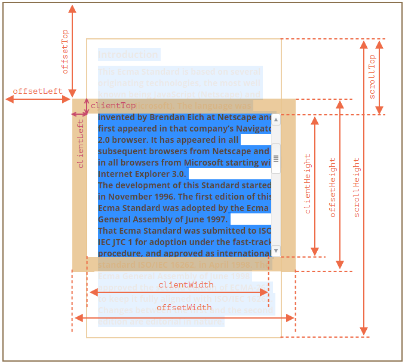

Документ
Браузерное окружение, спецификации
JavaScript может использоваться в браузере, на веб-сервере или в какой-то другой среде, даже в кофеварке. Каждая среда предоставляет свою функциональность, которую спецификация JavaScript называет окружением. Окружение предоставляет свои объекты и дополнительные функции, в дополнение базовым языковым. На картинке в общих чертах показано, что доступно для JavaScript в браузерном окружении:Корневой объект window выступает в 2 ролях: 1. Это глобальный объект для JavaScript-кода. 2. Он также представляет собой окно браузера и располагает методами для управления им. alert(window.innerHeight); // 964 (внутренняя высота окна браузера)
DOM (Document Object Model)
Document Object Model, сокращённо DOM – объектная модель документа, которая представляет все содержимое страницы в виде объектов. Объект document – основная «входная точка». С его помощью можно что-то создавать или менять на странице. document.body.style.background = "red"; setTimeout(() => document.body.style.background = "", 1000);BOM (Browser Object Model)
Объектная модель браузера (Browser Object Model, BOM) – это дополнительные объекты, предоставляемые браузером (окружением), чтобы работать со всем, кроме документа. Объект navigator даёт информацию о самом браузере и операционной системе. Объект location позволяет получить текущий URL и перенаправить браузер по новому адресу. alert(location.href); // показывает текущий URL if (confirm("Перейти на Wikipedia?")) { location.href = "https://wikipedia.org"; // перенаправляет браузер на другой URL }DOM-дерево
В соответствии с объектной моделью документа («Document Object Model», коротко DOM), каждый HTML-тег является объектом. Вложенные теги являются «детьми» родительского элемента. Текст, который находится внутри тега, также является объектом.Пример DOM
<!DOCTYPE HTML> <html> <head> <title>О лосях</title> </head> <body> Правда о лосях. </body> </html> DOM – это представление HTML-документа в виде дерева тегов. Вот как оно выглядит:Теги являются узлами-элементами (или просто элементами). Они образуют структуру дерева: <html> – это корневой узел, <head> и <body> его дочерние узлы и т.д. Пробелы и переводы строки – это полноправные символы, как буквы и цифры. Они образуют текстовые узлы и становятся частью дерева DOM. Существует всего два исключения из этого правила: 1. По историческим причинам пробелы и перевод строки перед тегом <head> игнорируются 2. Если записать что-либо после закрывающего тега </body>, браузер автоматически перемещает эту запись в конец body, поскольку спецификация HTML требует, чтобы всё содержимое было внутри <body>. Поэтому после закрывающего тега </body> не может быть никаких пробелов. В остальных случаях всё просто – если в документе есть пробелы (или любые другие символы), они становятся текстовыми узлами дерева DOM, и если мы их удалим, то в DOM их тоже не будет.
Автоисправление
Если браузер сталкивается с некорректно написанным HTML-кодом, он автоматически корректирует его при построении DOM. Например, в начале документа всегда должен быть тег <html>. Даже если его нет в документе – он будет в дереве DOM, браузер его создаст. То же самое касается и тега <body>. Важный «особый случай» – работа с таблицами. По стандарту DOM у них должен быть <tbody>, но в HTML их можно написать (официально) без него. В этом случае браузер добавляет <tbody> в DOM самостоятельно.Другие типы узлов
Есть и некоторые другие типы узлов, кроме элементов и текстовых узлов. Например, узел-комментарий. Казалось бы – зачем комментарий в DOM? Он никак не влияет на визуальное отображение. Но есть важное правило: если что-то есть в HTML, то оно должно быть в DOM-дереве. Существует 12 типов узлов. Но на практике мы в основном работаем с 4 из них: 1. document – «входная точка» в DOM. 2. узлы-элементы – HTML-теги, основные строительные блоки. 3. текстовые узлы – содержат текст. 4. комментарии – иногда в них можно включить информацию, которая не будет показана, но доступна в DOM для чтения JS.Взаимодействие с консолью
1. На вкладке Elements выбрать элемент. 2. Нажать Esc – прямо под вкладкой Elements откроется Console. Последний элемент, выбранный во вкладке Elements, доступен в консоли как $0; предыдущий, выбранный до него, как $1 и т.д. Например, $0.style.background = 'red' сделает выбранный элемент красным.Навигация по DOM-элементам
Самые верхние элементы дерева доступны как свойства объекта document: <html> = document.documentElement <body> = document.body <head> = document.head Есть одна тонкость: document.body может быть равен null Нельзя получить доступ к элементу, которого ещё не существует в момент выполнения скрипта. В частности, если скрипт находится в <head>, document.body в нём недоступен, потому что браузер его ещё не прочитал. В DOM значение null значит «не существует» или «нет такого узла».Дети: childNodes, firstChild, lastChild
Дочерние узлы (или дети) – элементы, которые являются непосредственными детьми узла. Потомки – все элементы, которые лежат внутри данного, включая детей, их детей и т.д. Коллекция childNodes содержит список всех детей, включая текстовые узлы. Свойства firstChild и lastChild обеспечивают быстрый доступ к первому и последнему дочернему элементу. Если у тега есть дочерние узлы, условие ниже всегда верно: elem.childNodes[0] === elem.firstChild elem.childNodes[elem.childNodes.length - 1] === elem.lastChild childNodes - это коллекция - особый перебираемый объект-псевдомассив. 1. Для перебора коллекции можно использовать цикл for..of (есть требуемый для этого метод Symbol.iterator). 2. Методы массивов не будут работать, т.к. коллекция - не массив. Если нужно использовать методы массивов, можно создать настоящий массив с помощью Array.from alert( Array.from(document.body.childNodes).filter ); // сделали массив DOM-коллекции – только для чтения Нельзя заменить один дочерний узел на другой просто написав childNodes[i] = ...Соседи и родитель
Соседи – это узлы, у которых один и тот же родитель. Следующий узел того же родителя (следующий сосед) – в свойстве nextSibling, а предыдущий – в previousSibling. alert( document.head.nextSibling ); // HTMLBodyElement alert( document.body.previousSibling ); // HTMLHeadElement Родитель доступен через parentNode. alert( document.body.parentNode === document.documentElement ); // trueНавигация только по элементам
children – коллекция детей, которые являются элементами. firstElementChild, lastElementChild – первый и последний дочерний элемент. previousElementSibling, nextElementSibling – соседи-элементы. parentElement – родитель-элемент. Свойство parentElement возвращает родитель-элемент, а parentNode возвращает «любого родителя». Обычно эти свойства одинаковы: они оба получают родителя. За исключением document.documentElement: alert( document.documentElement.parentNode ); // выведет document alert( document.documentElement.parentElement ); // выведет null for (let elem of document.body.children) { console.log(elem); // DIV, UL, DIV, SCRIPT (выводит только элементы) } for (let elem of document.body.childNodes) { console.log(elem); // #text div #text .. (выведет все узлы) }Ещё немного ссылок: таблицы
Некоторые типы DOM-элементов предоставляют для удобства дополнительные свойства, специфичные для их типа. Таблицы – отличный пример таких элементов. Элемент <table> поддерживает: table.rows – коллекция строк <tr> таблицы. table.caption/tHead/tFoot – ссылки на элементы таблицы <caption>, <thead>, <tfoot>. table.tBodies – коллекция элементов таблицы <tbody> (по спецификации их может быть больше одного). tbody.rows – коллекция строк <tr> секции. tr.cells – коллекция <td> и <th> ячеек, находящихся внутри строки <tr>. tr.sectionRowIndex – номер строки <tr> в текущей секции <thead>/<tbody>/<tfoot>. tr.rowIndex – номер строки <tr> в таблице (включая все строки таблицы). td.cellIndex – номер ячейки в строке <tr> (либо th.cellIndex). <table id="table"> <tr> <td>один</td><td>два</td> </tr> <tr> <td>три</td><td>четыре</td> </tr> </table> <script> alert( table.rows[0].cells[1].innerHTML ) // "два" </script> Итого Получив DOM-узел, мы можем перейти к его ближайшим соседям используя навигационные ссылки. Есть два основных набора ссылок: Для всех узлов: parentNode, childNodes, firstChild, lastChild, previousSibling, nextSibling. Только для узлов-элементов: parentElement, children, firstElementChild, lastElementChild, previousElementSibling, nextElementSibling.Поиск: getElement*, querySelector*
Для того, чтобы получить произвольный элемент страницы в DOM есть дополнительные методы поиска.document.getElementById
Если у элемента есть атрибут id, то можно получить его вызовом document.getElementById(id), где бы он ни находился. <div id="elem">Element</div> let elem = document.getElementById('elem'); elem.style.background = 'red'; Также есть глобальная переменная с именем, указанным в id: <div id="el"> <div id="elem-content">Элемент</div> </div> el.style.background = 'red'; window['elem-content']... // в имени id есть дефис, он не может служить названием переменной, но можно обратиться к нему через квадратные скобки и кавычки Если в JavaScript объявить переменную с тем же названием как id элемента, то она переназначит такую переменную. В реальной жизни лучше использовать document.getElementById.querySelectorAll
Самый универсальный метод поиска – это elem.querySelectorAll(css), он возвращает все элементы внутри elem, удовлетворяющие данному CSS-селектору. <ul> <li>Этот</li> <li>тест</li> </ul> <ul> <li>полностью</li> <li>пройден</li> </ul> <script> let elements = document.querySelectorAll('ul > li:last-child'); // ищет для ul прямые дочерние элементы li, которые являются последними детьми ul. for (let elem of elements) { alert(elem.innerHTML); // "тест", "пройден" } </script> Псевдоклассы тоже работают Псевдоклассы в CSS-селекторе, в частности :hover и :active, также поддерживаются. Например, document.querySelectorAll(':hover') вернёт коллекцию (в порядке вложенности: от внешнего к внутреннему) из текущих элементов под курсором мыши.
querySelector
Метод elem.querySelector(css) возвращает первый элемент, соответствующий данному CSS-селектору. document.querySelector('form[name="search"]'); // ищет тег form с атрибутом name="search".getElementsBy*
Существуют также другие методы поиска элементов по тегу, классу и так далее. На данный момент, они скорее исторические, так как querySelector более чем эффективен. elem.getElementsByTagName(tag) ищет элементы с данным тегом и возвращает их коллекцию. Передав "*" вместо тега, можно получить всех потомков. elem.getElementsByClassName(className) возвращает элементы, которые имеют данный CSS-класс. document.getElementsByName(name) возвращает элементы с заданным атрибутом name. Редко используется. Поиск можно вести только по document (т.е document.getElementsByName('...')) let divs = document.getElementsByTagName('div'); let articles = divs[0].getElementsByClassName('article'); let form = document.getElementsByName('my-form')[0]; // my-form - значение атрибута nameЖивые коллекции
Все методы "getElementsBy*" возвращают живую коллекцию. Такие коллекции всегда отражают текущее состояние документа и автоматически обновляются при его изменении. Напротив, querySelectorAll возвращает статическую коллекцию. Это похоже на фиксированный массив элементов. Длина статической коллекции не меняется после появления нового элемента в документе. <div>First div</div> <script> let divs = document.getElementsByTagName('div'); alert(divs.length); // 1 </script> <div>Second div</div> <script> alert(divs.length); // 2 (для querySelectorAll значение не поменялось бы) </script>matches
Метод elem.matches(css) ничего не ищет, а проверяет, удовлетворяет ли elem CSS-селектору, и возвращает true или false. <a href="http://example.com/file.zip">...</a> <a href="http://ya.ru">...</a> <script> // может быть любая коллекция вместо document.body.children for (let elem of document.body.children) { if (elem.matches('a[href$="zip"]')) { alert("Ссылка на архив: " + elem.href ); } } </script>closest
Предки элемента – родитель, родитель родителя, его родитель и так далее. Вместе они образуют цепочку иерархии от элемента до вершины. Метод elem.closest(css) ищет ближайшего предка, который соответствует CSS-селектору. Сам элемент также включается в поиск. Метод возвращает либо предка, либо null, если такой элемент не найден. <h1>Содержание</h1> <div class="contents"> <ul class="book"> <li class="chapter">Глава 1</li> <li class="chapter">Глава 2</li> </ul> </div> <script> let chapter = document.querySelector('.chapter'); // LI alert(chapter.closest('.book')); // UL alert(chapter.closest('.contents')); // DIV alert(chapter.closest('h1')); // null (потому что h1 - не предок) </script> elemA.contains(elemB) вернёт true, если elemB находится внутри elemA (elemB потомок elemA) или когда elemA == elemB.Свойства узлов: тип, тег и содержимое
Классы DOM-узлов
Каждый DOM-узел принадлежит определённому классу. Классы формируют иерархию. Весь набор свойств и методов является результатом наследования. Основные классы: EventTarget -> Node -> Element -> HTMLElement -> HTMLBodyElement Text SVGElement HTMLInputElement Comment HTMLAnchorElement Document EventTarget – это корневой «абстрактный» класс. Объекты этого класса никогда не создаются. Он служит основой, благодаря которой все DOM-узлы поддерживают так называемые «события». Node – также является «абстрактным» классом, и служит основой для DOM-узлов. Он обеспечивает базовую функциональность: parentNode, nextSibling, childNodes и т.д. (это геттеры). Объекты класса Node никогда не создаются. Element – это базовый класс для DOM-элементов. Он обеспечивает навигацию на уровне элементов: nextElementSibling, children и методы поиска: getElementsByTagName, querySelector. Браузер поддерживает не только HTML, но также XML и SVG. HTMLElement – является базовым классом для всех остальных HTML-элементов. Для того, чтобы узнать имя класса DOM-узла, есть свойство constructor. Оно ссылается на конструктор класса, и в свойстве constructor.name содержится его имя: alert( document.body.constructor.name ); // HTMLBodyElement …Или можно просто привести его к строке: alert( document.body ); // [object HTMLBodyElement] Для JavaScript-объектов команды console.log и console.dir обычно выводят одно и то же. Но для DOM-элементов они работают по-разному: console.log(elem) выводит элемент в виде DOM-дерева. console.dir(elem) выводит элемент в виде DOM-объекта, что удобно для анализа его свойств.Свойство «nodeType»
Свойство nodeType предоставляет ещё один, «старомодный» способ узнать «тип» DOM-узла. Его значением является цифра: elem.nodeType == 1 для узлов-элементов, elem.nodeType == 3 для текстовых узлов, elem.nodeType == 8 для узлов-комментариев, elem.nodeType == 9 для объектов документа. console.log(document.body.nodeType) // 1 console.log(document.body.firstChild.nodeType) // 3 console.log(document.nodeType) // 9 В современных скриптах чтобы узнать тип узла, можно использовать метод instanceof и другие способы проверить класс, но иногда проще использовать nodeType.Тег: nodeName и tagName
Получив DOM-узел, можно узнать имя его тега из свойств nodeName и tagName: alert( document.body.nodeName ); // BODY alert( document.body.tagName ); // BODY Свойство tagName есть только у элементов Element. Свойство nodeName определено для любых узлов Node: для элементов оно равно tagName, для остальных типов узлов (текст, комментарий и т.д.) оно содержит строку с типом узла. // для комментария alert( document.body.firstChild.tagName ); // undefined (не элемент) alert( document.body.firstChild.nodeName ); // #comment // for document alert( document.tagName ); // undefined (не элемент) alert( document.nodeName ); // #document Если имеем дело только с элементами, можно использовать tagName или nodeName, нет разницы. В браузере существуют два режима обработки документа: HTML и XML. В HTML-режиме значения tagName/nodeName всегда записаны в верхнем регистре. Будет выведено BODY вне зависимости от того, как записан тег в HTML <body> или <BoDy>.innerHTML: содержимое элемента
Свойство innerHTML позволяет получить HTML-содержимое элемента в виде строки. Его можно изменять. alert( document.body.innerHTML ); // читаем текущее содержимое document.body.innerHTML = 'Новый BODY!'; // заменяем содержимое Мы можем попробовать вставить некорректный HTML, браузер исправит наши ошибки: document.body.innerHTML = '<b>тест'; // забыли закрыть тег alert( document.body.innerHTML ); // <b>тест</b> (исправлено) Скрипты не выполнятся. Если innerHTML вставляет в документ тег <script> – он становится частью HTML, но не запускается. Внимание: «innerHTML+=» осуществляет перезапись. Мы можем добавить HTML к элементу, используя elem.innerHTML += "ещё html". chatDiv.innerHTML += "<div>Привет<img src='smile.gif'/> </div>"; chatDiv.innerHTML += "Как дела?"; На практике этим следует пользоваться с большой осторожностью, так как фактически происходит не добавление, а перезапись. То есть, innerHTML+= делает следующее: Старое содержимое удаляется. На его место становится новое значение innerHTML (с добавленной строкой). Так как содержимое «обнуляется» и переписывается заново, все изображения и другие ресурсы будут перезагружены. Есть и другие побочные эффекты. Например, если существующий текст выделен мышкой, то при переписывании innerHTML большинство браузеров снимут выделение. А если это поле ввода <input> с текстом, введённым пользователем, то текст будет удалён. И т.д. К счастью, есть и другие способы добавить содержимое, не использующие innerHTML.outerHTML: HTML элемента целиком
Свойство outerHTML содержит HTML элемента целиком. console.log(document.querySelector('input').outerHTML) // '<input type="text">' Будьте осторожны: в отличие от innerHTML, запись в outerHTML не изменяет элемент. Вместо этого элемент заменяется целиком во внешнем контексте. let div = document.querySelector('div'); div.outerHTML = '<p>Новый элемент</p>'; // заменяем div.outerHTML на <p>...</p> alert(div.outerHTML); // <div>Привет, мир!</div> // Содержимое div осталось тем же! Старая переменная div осталась прежней. Это потому, что использование outerHTML не изменяет DOM-элемент, а удаляет его из внешнего контекста и вставляет вместо него новый HTML-код. То есть, при div.outerHTML=... произошло следующее: div был удалён из документа. Вместо него был вставлен другой HTML <p>Новый элемент</p>. В div осталось старое значение. Новый HTML не сохранён ни в какой переменной. Мы можем писать в elem.outerHTML, но надо иметь в виду, что это не меняет элемент, в который мы пишем. Вместо этого создаётся новый HTML на его месте. Мы можем получить ссылки на новые элементы, обратившись к DOM.nodeValue/data: содержимое текстового узла
Свойство innerHTML есть только у узлов-элементов. У других типов узлов, в частности, у текстовых, есть свои аналоги: свойства nodeValue и data. Эти свойства очень похожи при использовании. Пример: <body> Привет <!-- Комментарий --> </body> let text = document.body.firstChild; alert(text.data); // Привет let comment = text.nextSibling; alert(comment.data); // КомментарийtextContent: просто текст
Свойство textContent предоставляет доступ к тексту внутри элемента за вычетом всех <тегов>. <div id="news"> <h1>Срочно в номер!</h1> <p>Марсиане атаковали человечество!</p> </div> alert(news.textContent); // Срочно в номер! Марсиане атаковали человечество! Намного полезнее возможность записывать текст в textContent, т.к. позволяет писать текст «безопасным способом». Представим, что есть произвольная строка, введённая пользователем, и мы хотим показать её. С innerHTML вставка происходит «как HTML», со всеми HTML-тегами. С textContent вставка получается «как текст», все символы трактуются буквально. let name = prompt("Введите ваше имя?", "<b>Винни-пух!</b>"); elem1.innerHTML = name; // Винни-пух! (жирным) elem2.textContent = name; // <b>Винни-пух!</b> В большинстве случаев мы не хотим, чтобы на сайте появлялся произвольный HTML-код. Присваивание через textContent – один из способов от этого защититься.Свойство «hidden»
Атрибут и DOM-свойство «hidden» указывает на то, видим ли мы элемент или нет. Можно использовать его в HTML или назначать при помощи JavaScript: <div hidden>С атрибутом "hidden"</div> <div id="elem">С назначенным JavaScript свойством "hidden"</div> elem.hidden = true; Технически, hidden работает так же, как style="display:none". Но его применение проще. Мигающий элемент: setInterval(() => elem.hidden = !elem.hidden, 1000);Другие свойства
У DOM-элементов есть дополнительные свойства, в частности, зависящие от класса: value – значение для <input>, <select> и <textarea> (HTMLInputElement, HTMLSelectElement…). href – адрес ссылки «href» для <a href="..."> (HTMLAnchorElement). id – значение атрибута «id» для всех элементов (HTMLElement). <input type="text" id="elem" value="значение"> alert(elem.type); // "text" alert(elem.id); // "elem" alert(elem.value); // значение Если нужно узнать полный список поддерживаемых свойств для данного класса, можно найти их в спецификации. Если же нужно быстро что-либо узнать или интересует специфика определённого браузера – всегда можно вывести элемент в консоль через console.dir(elem), и прочитать все свойства. Или исследовать «свойства DOM» во вкладке Elements браузерных инструментов разработчика.Атрибуты и свойства
Когда браузер загружает страницу, он «читает» («парсит») HTML и генерирует из него DOM-объекты. Для узлов-элементов большинство стандартных HTML-атрибутов автоматически становятся свойствами DOM-объектов. Например, для тега <body id="page"> у DOM-объекта будет свойство body.id="page". Но преобразование атрибута в свойство не всегда происходит один-в-один!DOM-свойства
DOM-узлы – это обычные объекты JavaScript. Мы можем их изменять. document.body.sayTagName = function() { alert(this.tagName); }; document.body.sayTagName(); // BODY Итак, DOM-свойства и методы ведут себя так же, как и обычные объекты JavaScript: Им можно присвоить любое значение. Они регистрозависимы (нужно писать elem.nodeType, не elem.NoDeTyPe).HTML-атрибуты
Когда браузер парсит HTML, чтобы создать DOM-объекты для тегов, он распознаёт стандартные атрибуты и создаёт DOM-свойства для них. Таким образом, когда у элемента есть id или другой стандартный атрибут, создаётся соответствующее свойство. Но этого не происходит, если атрибут нестандартный. <body id="test" something="non-standard"> alert(document.body.id); // test alert(document.body.something); // undefined (атрибут не преобразуется в свойство) Стандартный атрибут для одного тега может быть нестандартным для другого. Например, атрибут "type" является стандартным для элемента <input> (HTMLInputElement), но не является стандартным для <body> (HTMLBodyElement). <body id="body" type="..."> <input id="input" type="text"> alert(input.type); // text alert(body.type); // undefined Таким образом, для нестандартных атрибутов не будет соответствующих DOM-свойств. Однако, все атрибуты доступны с помощью следующих методов: elem.hasAttribute(name) – проверяет наличие атрибута. elem.getAttribute(name) – получает значение атрибута. elem.setAttribute(name, value) – устанавливает значение атрибута. elem.removeAttribute(name) – удаляет атрибут. Эти методы работают именно с тем, что написано в HTML. elem.attributes - свойство, с помощью которого можно получить все атрибуты элемента. Это коллекция объектов, которая принадлежит встроенному классу Attr со свойствами name и value. Вот демонстрация чтения нестандартного свойства: <body something="non-standard"> alert(document.body.getAttribute('something')); // non-standard У HTML-атрибутов есть следующие особенности: Их имена регистронезависимы (id то же самое, что и ID). Их значения всегда являются строками. Если присвоить что-либо атрибуту, это станет строкой. Пример работы с атрибутами: <div id="elem" about="Elephant"></div> alert( elem.getAttribute('About') ); // Elephant elem.setAttribute('Test', 123); alert( elem.outerHTML ); // <div id="elem" about="Elephant" test="123"></div> for (let attr of elem.attributes) { // весь список alert( `${attr.name} = ${attr.value}` ); } Коллекция attributes является перебираемой. В ней есть все атрибуты элемента (стандартные и нестандартные) в виде объектов со свойствами name и value.Синхронизация между атрибутами и свойствами
Когда стандартный атрибут изменяется, соответствующее свойство автоматически обновляется. Это работает и в обратную сторону (за некоторыми исключениями). Пример 1: let input = document.querySelector('input'); input.setAttribute('id', 'id'); // атрибут => свойство alert(input.id); // id (обновлено) input.id = 'newId'; // свойство => атрибут alert(input.getAttribute('id')); // newId (обновлено) Пример 2: let input = document.querySelector('input'); input.setAttribute('value', 'text'); // атрибут => значение alert(input.value); // text input.value = 'newValue'; // свойство => атрибут alert(input.getAttribute('value')); // text (не обновилось!) Изменение атрибута value обновило свойство. Но изменение свойства не повлияло на атрибут. Иногда эта «особенность» может пригодиться, потому что действия пользователя могут приводить к изменениям value, и если после этого мы захотим восстановить «оригинальное» значение из HTML, оно будет в атрибуте.DOM-свойства типизированы
DOM-свойства не всегда являются строками. Например, свойство input.checked (для чекбоксов) имеет логический тип: <input id="input" type="checkbox" checked> checkbox alert(input.getAttribute('checked')); // пустая строка (значение атрибута) alert(input.checked); // true (значение свойства) Есть и другие примеры. Атрибут style – строка, но свойство style является объектом: <div id="div" style="color:red;font-size:120%">Hello</div> alert(div.getAttribute('style')); // color:red;font-size:120% (строка) alert(div.style); // [object CSSStyleDeclaration] (объект) alert(div.style.color); // red Большинство свойств, всё же, строки. При этом некоторые из них, хоть и строки, могут отличаться от атрибутов. Например, DOM-свойство href всегда содержит полный URL, даже если атрибут содержит относительный URL или просто #hash. <a id="a" href="#hello">link</a> alert(a.getAttribute('href')); // #hello alert(a.href ); // полный URL в виде http://site.com/page#hello Если нужно значение любого атрибута в точности, как оно записано в HTML, можно воспользоваться getAttribute.Нестандартные атрибуты, dataset
Иногда нестандартные атрибуты используются для передачи пользовательских данных из HTML в JavaScript, или чтобы «помечать» HTML-элементы для JavaScript. <div show-info="name"></div> (пометить div, чтобы показать здесь поле "name") <div show-info="age"></div> (а здесь возраст "age") let user = { name: "Pete", age: 25 }; for(let div of document.querySelectorAll('[show-info]')) { let field = div.getAttribute('show-info'); div.innerHTML = user[field]; // сначала Pete в name, потом 25 в age } Также они могут быть использованы, чтобы стилизовать элементы. Атрибут может быть предпочтительнее классов потому, что атрибутом удобнее управлять. Состояние может быть изменено достаточно просто с помощью setAttribute; Но с пользовательскими атрибутами могут возникнуть проблемы. Что если мы используем нестандартный атрибут для наших целей, а позже он появится в стандарте и будет выполнять какую-то функцию? Чтобы избежать конфликтов, существуют атрибуты вида data-*. Все атрибуты, начинающиеся с префикса «data-», зарезервированы для использования программистами. Они доступны в свойстве dataset. Например, если у elem есть атрибут "data-about", то обратиться к нему можно как elem.dataset.about: <body data-about="Elephants"> alert(document.body.dataset.about); // Elephants Атрибуты, состоящие из нескольких слов, к примеру data-order-state, становятся свойствами, записанными с помощью верблюжьей нотации: dataset.orderState. <style> .order[data-order-state="new"] { color: green; } .order[data-order-state="pending"] { color: blue; } .order[data-order-state="canceled"] { color: red; } </style> <div id="order" class="order" data-order-state="new"> A new order. </div> alert(order.dataset.orderState); // new order.dataset.orderState = "pending"; // изменение Использование data-* атрибутов – безопасный способ передачи пользовательских данных. ИТОГО: Атрибуты – это то, что написано в HTML. Тип - строка. Имя регистронезависимо. Свойства – то, что находится в DOM-объектах. Тип - любое значение. Имя регистрозависимо. В большинстве ситуаций предпочтительнее использовать DOM-свойства. Нужно использовать атрибуты тогда, когда DOM-свойства не подходят, когда нужны именно атрибуты, например: Нужен нестандартный атрибут. Мы хотим получить именно то значение, которое написано в HTML.Изменение документа
Создание элемента
DOM-узел можно создать двумя методами: document.createElement(tag) и document.createTextNode(text) Создаёт новый элемент с заданным тегом: let div = document.createElement('div'); Создаёт новый текстовый узел с заданным текстом: let textNode = document.createTextNode('А вот и я'); Пример: создание сообщения let div = document.createElement('div'); div.className = "alert"; div.innerHTML = "<strong>Всем привет!</strong> Вы прочитали сообщение.";Методы вставки
Чтобы наш div появился, нам нужно вставить его где-нибудь в document. Для этого есть метод append, в нашем случае: document.body.append(div). Вот методы для различных вариантов вставки: node.append(...nodes or strings) – добавляет узлы или строки в конец node, node.prepend(...nodes or strings) – вставляет узлы или строки в начало node, node.before(...nodes or strings) –- вставляет узлы или строки до node, node.after(...nodes or strings) –- вставляет узлы или строки после node, node.replaceWith(...nodes or strings) –- заменяет node заданными узлами или строками. Пример. Было в HTML: <ol id="ol"> <li>0</li> <li>1</li> <li>2</li> </ol> JS: ol.before('before'); // вставить строку "before" перед <ol> ol.after('after'); // вставить строку "after" после <ol> let liFirst = document.createElement('li'); liFirst.innerHTML = 'prepend'; ol.prepend(liFirst); // вставить liFirst в начало <ol> let liLast = document.createElement('li'); liLast.innerHTML = 'append'; ol.append(liLast); // вставить liLast в конец <ol> Стало на странице: before 1. prepend 2. 0 3. 1 4. 2 5. append after Эти методы могут вставлять несколько узлов и текстовых фрагментов за один вызов. div.before('<p>Привет</p>', document.createElement('hr'));insertAdjacentHTML/Text/Element
Если нужно вставить HTML, со всеми тегами и прочим, как делает это elem.innerHTML, поможет довольно универсальный метод: elem.insertAdjacentHTML(where, html). Первый параметр – это специальное слово, указывающее, куда по отношению к elem производить вставку. Значение должно быть одним из следующих: "beforebegin" – вставить html непосредственно перед elem, "afterbegin" – вставить html в начало elem, "beforeend" – вставить html в конец elem, "afterend" – вставить html непосредственно после elem. Второй параметр – это HTML-строка, которая будет вставлена именно «как HTML». Для div с id="div": div.insertAdjacentHTML('beforebegin', '<p>Привет</p>'); div.insertAdjacentHTML('afterend', '<p>Пока</p>'); Результат: <p>Привет</p> <div id="div"></div> <p>Пока</p> У метода есть два брата: elem.insertAdjacentText(where, text) – такой же синтаксис, но строка text вставляется «как текст», вместо HTML, elem.insertAdjacentElement(where, elem) – такой же синтаксис, но вставляет элемент elem. Они существуют, в основном, чтобы унифицировать синтаксис. На практике часто используется только insertAdjacentHTML. Потому что для элементов и текста у нас есть методы append/prepend/before/after – их быстрее написать, и они могут вставлять как узлы, так и текст.Удаление узлов
Для удаления узла есть методы node.remove(). Если нам нужно переместить элемент в другое место – можно не удалять его со старого. Все методы вставки автоматически удаляют узлы со старых мест. Пример: <div id="first">Первый</div> <div id="second">Второй</div> second.after(first); // берёт #second и после него вставляет #firstКлонирование узлов: cloneNode
Вызов elem.cloneNode(true) создаёт «глубокий» клон элемента – со всеми атрибутами и дочерними элементами. Если вызвать elem.cloneNode(), клон будет без дочерних элементов. <div class="alert" id="div"> <strong>Всем привет!</strong> Вы прочитали важное сообщение. </div> let div2 = div.cloneNode(true); // клонировать сообщение div2.querySelector('strong').innerHTML = 'Всем пока!'; // изменить клон div.after(div2); // показать клонированный элемент после существующего divDocumentFragment
DocumentFragment является специальным DOM-узлом, который служит обёрткой для передачи списков узлов. Можно добавить к нему другие узлы, но когда мы вставляем его куда-то, он «исчезает», вместо него вставляется его содержимое. <ul id="ul"></ul> function getListContent() { let fragment = new DocumentFragment(); for(let i=1; i<=3; i++) { let li = document.createElement('li'); li.append(i); fragment.append(li); } return fragment; } ul.append(getListContent()); // (*) Результат: <ul> <li>1</li> <li>2</li> <li>3</li> </ul> DocumentFragment редко используется. Зачем добавлять элементы в специальный вид узла, если вместо этого мы можем вернуть массив узлов? <ul id="ul"></ul> function getListContent() { let result = []; for(let i=1; i<=3; i++) { let li = document.createElement('li'); li.append(i); result.push(li); } return result; } ul.append(...getListContent()); // append + оператор "..." = друзья!Устаревшие методы вставки/удаления
Эта информация помогает понять старые скрипты, но не нужна для новой разработки. parentElem.appendChild(node) Добавляет node в конец дочерних элементов parentElem. parentElem.insertBefore(node, nextSibling) Вставляет node перед nextSibling в parentElem. parentElem.replaceChild(node, oldChild) Заменяет oldChild на node среди дочерних элементов parentElem. parentElem.removeChild(node) Удаляет node из parentElem (предполагается, что он родитель node).Несколько слов о «document.write»
Есть ещё один, очень древний метод добавления содержимого на веб-страницу: document.write. <p>Где-то на странице...</p> <script> document.write('<b>Привет из JS</b>'); </script> <p>Конец</p> Вызов document.write(html) записывает html на страницу «прямо здесь и сейчас». В современных скриптах он редко встречается из-за следующего важного ограничения: Вызов document.write работает только во время загрузки страницы. Если вызвать его позже, то существующее содержимое документа затрётся. Так что после того, как страница загружена, он непригоден к использованию. Есть и преимущество. Технически, когда document.write запускается во время чтения HTML браузером, и что-то пишет в документ, то браузер воспринимает это так, как будто это изначально было частью загруженного HTML-документа. Поэтому он работает невероятно быстро, ведь при этом нет модификации DOM. Метод пишет прямо в текст страницы, пока DOM ещё в процессе создания. Так что, если нужно динамически добавить много текста в HTML, и мы находимся на стадии загрузки, и для нас очень важна скорость, это может помочь. Но на практике эти требования редко сочетаются. Итого Методы для создания узлов: document.createElement(tag) – создаёт элемент с заданным тегом, document.createTextNode(value) – создаёт текстовый узел (редко используется), elem.cloneNode(deep) – клонирует элемент, если deep==true, то со всеми дочерними элементами. Вставка и удаление: node.append(...nodes or strings) – вставляет в node в конец, node.prepend(...nodes or strings) – вставляет в node в начало, node.before(...nodes or strings) – вставляет прямо перед node, node.after(...nodes or strings) – вставляет сразу после node, node.replaceWith(...nodes or strings) – заменяет node. node.remove() – удаляет node. elem.insertAdjacentHTML(where, html) - вставляет фрагмент HTML в зависимости от where: "beforebegin" – вставляет html прямо перед elem, "afterbegin" – вставляет html в elem в начало, "beforeend" – вставляет html в elem в конец, "afterend" – вставляет html сразу после elem.Стили и классы
className и classList
elem.className соответствует атрибуту "class". <body class="main page"> alert(document.body.className); // main page Если присвоить что-то elem.className, то это заменит всю строку с классами. Но часто мы хотим добавить/удалить один класс. Для этого есть другое свойство: elem.classList. elem.classList – это специальный объект с методами для добавления/удаления одного класса. <body class="main page"> document.body.classList.add('article'); alert(document.body.className); // main page article Методы classList: elem.classList.add/remove("class") – добавить/удалить класс. elem.classList.toggle("class") – добавить класс, если его нет, иначе удалить. elem.classList.contains("class") – проверка наличия класса, возвращает true/false. Кроме того, classList является перебираемым, поэтому можно перечислить все классы при помощи for..of: for (let name of document.body.classList) { alert(name); // main, затем page }Element style
Свойство elem.style – это объект, который соответствует тому, что написано в атрибуте "style". Установка стиля elem.style.width="100px" работает так же, как наличие в атрибуте style строки width:100px. Для свойства из нескольких слов используется camelCase: background-color => elem.style.backgroundColor z-index => elem.style.zIndex document.body.style.backgroundColor = prompt('background color?', 'green'); Свойства с префиксом Стили с браузерным префиксом, например, -moz-border-radius, -webkit-border-radius преобразуются по тому же принципу: дефис означает заглавную букву. button.style.MozBorderRadius = '5px'; button.style.WebkitBorderRadius = '5px';Сброс стилей
Иногда нужно добавить свойство стиля, а позже убрать его. Чтобы скрыть элемент, можно задать elem.style.display = "none". Затем можно удалить свойство style.display, чтобы вернуться к первоначальному состоянию: elem.style.display = "". document.body.style.display = "none"; // скрыть // если запустить этот код, <body> "мигнёт" setTimeout(() => document.body.style.display = "", 1000); // вернуть Если установить в style.display пустую строку, то браузер применит CSS-классы и встроенные стили, как если бы такого свойства style.display вообще не было. Полная перезапись style.cssText Обычно мы используем style.* для присвоения индивидуальных свойств стиля. Нельзя установить список стилей как, например, div.style="color: red; width: 100px", потому что div.style – это объект, и он доступен только для чтения. Для задания нескольких стилей в одной строке используется свойство style.cssText: <div id="div">Button</div> div.style.cssText=`color: red !important; background-color: yellow; width: 100px; text-align: center; `; Это свойство редко используется, потому что такое присваивание удаляет все существующие стили: оно не добавляет, а заменяет их. То же самое можно сделать установкой атрибута: div.setAttribute('style', 'color: red...').Вычисленные стили: getComputedStyle
Используя elem.style, нельзя прочитать ничего, что приходит из классов CSS. <head> <style> body { color: red; margin: 5px } </style> </head> alert(document.body.style.color); // пусто alert(document.body.style.marginTop); // пусто …Но что, если нам нужно, скажем, увеличить отступ на 20px? Для начала нужно его текущее значение получить. Для этого есть метод: getComputedStyle. Синтаксис: getComputedStyle(element, [pseudo]) element - элемент, значения для которого нужно получить. pseudo - указывается, если нужен стиль псевдоэлемента, например '::before'. Пустая строка или отсутствие аргумента означают сам элемент. <head> <style> body { color: red; margin: 5px } </style> </head> let computedStyle = getComputedStyle(document.body); alert( computedStyle.marginTop ); // 5px alert( computedStyle.color ); // rgb(255, 0, 0) Вычисленное (computed) и окончательное (resolved) значения Есть две концепции в CSS: Вычисленное (computed) значение – то, которое получено после применения всех CSS-правил и CSS-наследования. Например, height:1em или font-size:125%. Окончательное (resolved) значение – непосредственно применяемое к элементу. Значения 1em или 125% являются относительными. Браузер берёт вычисленное значение и делает все единицы измерения фиксированными и абсолютными, как height:20px или font-size:16px. Для геометри- ческих свойств разрешённые значения могут иметь плавающую точку, например, width:50.5px. В настоящее время getComputedStyle фактически возвращает окончательное значение свойства, для геометрии оно обычно в пикселях. Для правильного получения значения нужно указать точное свойство. Например: paddingLeft, marginTop, borderTopWidth. При обращении к сокращённому: padding, margin, border – правильный результат не гарантируется. Стили, применяемые к посещённым :visited ссылкам, скрываются! Посещённые ссылки могут быть окрашены с помощью псевдокласса :visited. Но getComputedStyle не даёт доступ к этой информации, чтобы произвольная страница не могла определить, посещал ли пользователь ту или иную ссылку, проверив стили. JavaScript не видит стили, применяемые с помощью :visited. Итого Для управления классами существуют два DOM-свойства: className – строковое значение, удобно для управления всем набором классов. classList – объект с методами add/remove/toggle/contains, удобно для управления отдельными классами. Чтобы изменить стили: Свойство style является объектом со стилями в формате camelCase. Чтение и запись в него работают так же, как изменение соответствующих свойств в атрибуте "style". Свойство style.cssText соответствует всему атрибуту "style", полной строке стилей. Для чтения окончательных стилей (с учётом всех классов, после применения CSS и вычисления окончательных значений) используется: Метод getComputedStyle(elem, [pseudo]) возвращает объект, похожий по формату на style. Только для чтения.Размеры и прокрутка элементов
Существует множество JavaScript-свойств, которые позволяют считывать информацию об элементе: ширину, высоту и другие геометрические характеристики. В этой главе мы будем называть их «метрики». Простой пример В качестве простого примера демонстрации свойств мы будем использовать следующий элемент: <style> #example { width: 300px; height: 200px; border: 25px solid #E8C48F; padding: 20px; overflow: auto; } </style> <div id="example"> ...Текст... </div> У элемента есть рамка, внутренний отступ и прокрутка. Полный набор характеристик. Тут нет внешних отступов (margin), потому что они не являются частью элемента. Некоторые браузеры (не все) отбирают место для полосы прокрутки, забирая его у области, отведённой для содержимого. Результат выглядит так:
Метрики
Вот общая картина с геометрическими свойствами: offsetParent, offsetLeft/Top
В свойстве offsetParent находится предок элемента, который используется внутри браузера для вычисления координат при рендеринге. То есть, ближайший предок, который удовлетворяет следующим условиям: 1. Является CSS-позиционированным (CSS-свойство position равно absolute, relative, fixed или sticky), 2. или <td>, <th>, <table>, 3. или <body>. Свойства offsetLeft/offsetTop содержат координаты x/y относительно верхнего левого угла offsetParent. <main style="position: relative" id="main"> <article> <div id="example" style="position: absolute; left: 180px; top: 180px">... </div> </article> </main> alert(example.offsetParent.id); // main alert(example.offsetLeft); // 180 (обратите внимание: число, а не строка "180px") alert(example.offsetTop); // 180 Существует несколько ситуаций, когда offsetParent равно null: 1. Для скрытых элементов (с CSS-свойством display:none или когда его нет в документе). 2. Для элементов <body> и <html>. 3. Для элементов с position:fixed.offsetWidth/Height
Они содержат «внешнюю» ширину/высоту элемента, то есть его полный размер, включая рамки. Метрики для не показываемых элементов равны нулю. Координаты и размеры в JavaScript устанавливаются только для видимых элементов.clientTop/Left
Внутри элемента у нас рамки (border). Для них есть свойства-метрики. clientTop и clientLeft - ширина верхней и левой рамок. …Но на самом деле эти свойства – вовсе не ширины рамок, а отступы внутренней части элемента от внешней. Разница возникает, когда документ располагается справа налево (операционная система на арабском языке или иврите). Полоса прокрутки в этом случае находится слева, и тогда свойство clientLeft включает в себя ещё и ширину полосы прокрутки.clientWidth/Height
Эти свойства – размер области внутри рамок элемента. Они включают в себя ширину области содержимого вместе с внутренними отступами padding, но без прокрутки. Поэтому в тех случаях, когда мы точно знаем, что отступов нет, можно использовать clientWidth/clientHeight для получения размеров внутренней области содержимого.scrollWidth/Height
Эти свойства – как clientWidth/clientHeight, но также включают в себя прокрученную (которую не видно) часть элемента. Эти свойства можно использовать, чтобы «распахнуть» элемент на всю ширину/высоту: element.style.height = `${element.scrollHeight}px`;scrollLeft/scrollTop
Свойства scrollLeft/scrollTop – ширина/высота невидимой, уже прокрученной в данный момент части элемента слева и сверху. (0 если нет полосы прокрутки или еще не прокручено) Свойства scrollLeft/scrollTop можно изменять Все свойства, описанные в этой главе, доступны только для чтения, в отличии от scrollLeft и scrollTop, значения которых можно изменять (и браузер выполнит прокрутку элемента). elem.scrollTop += 10 Установка значения scrollTop на 0 или на такое большое число как 1e9 прокрутит элемент в самый верх/низ соответственно. Также можно использовать метод scroll вместо этих свойств. В качестве параметра метод принимает объект со свойствами left, top и behavior: elem.scroll({ left: 0, // свойство можно не указывать, если оно равно нулю top: 500, behavior: 'smooth', });Не стоит брать width/height из CSS
CSS-высоту и ширину можно извлечь, используя getComputedStyle, но так делать не стоит. 1. Во-первых, CSS-свойства width/height зависят от другого свойства – box-sizing, которое определяет, «что такое», собственно, эти CSS-ширина и высота. Получается, что изменение box-sizing, к примеру, для более удобной вёрстки, сломает такой JavaScript. 2. Во-вторых, в CSS свойства width/height могут быть равны auto (например, для инлайнового элемента). 3. Есть и ещё одна причина: полоса прокрутки «отъедает» место от области внутреннего содержимого в некоторых браузерах. Таким образом, реальная ширина содержимого меньше CSS-ширины. Как раз это и учитывают свойства clientWidth/clientHeight. С getComputedStyle(elem).width могут возникать кроссбраузерные отличия – ещё один повод не использовать getComputedStyle, а использовать свойства-метрики.Размеры и прокрутка окна
Ширина/высота окна
Чтобы получить ширину/высоту окна, можно взять свойства clientWidth/clientHeight из document.documentElement. Браузеры также поддерживают свойства window.innerWidth/innerHeight. Вроде бы, похоже на то, что нужно. Почему же не использовать их? Если есть полоса прокрутки, и она занимает какое-то место, то свойства clientWidth/clientHeight указывают на ширину/высоту документа без неё (за её вычетом). Иными словами, они возвращают высоту/ширину видимой части документа, доступной для содержимого. А window.innerWidth/innerHeight включают в себя полосу прокрутки. alert( window.innerWidth ); // полная ширина окна alert( document.documentElement.clientWidth ); // ширина окна без полосы прокрутки В большинстве случаев нам нужна доступная ширина окна: для рисования или позиционирования. Поэтому следует использовать documentElement.clientHeight/Width. DOCTYPE – это важно. Геометрические свойства верхнего уровня могут работать немного иначе, если в HTML нет <!DOCTYPE HTML>. Возможны странности.Ширина/высота документа
Теоретически, т.к. корневым элементом документа является documentElement, и он включает в себя всё содержимое, мы можем получить полный размер документа как documentElement.scrollWidth/scrollHeight. Но именно на этом элементе, для страницы в целом, эти свойства работают не так, как предполагается. В Chrome/Safari/Opera, если нет прокрутки, то documentElement.scrollHeight может быть даже меньше, чем documentElement.clientHeight! Чтобы надёжно получить полную высоту документа, следует взять максимальное из этих свойств: let scrollHeight = Math.max( document.body.scrollHeight, document.documentElement.scrollHeight, document.body.offsetHeight, document.documentElement.offsetHeight, document.body.clientHeight, document.documentElement.clientHeight ); alert('Полная высота документа с прокручиваемой частью: ' + scrollHeight);Получение текущей прокрутки
Текущую прокрутку можно прочитать из свойств window.pageXOffset/pageYOffset: alert('Текущая прокрутка сверху: ' + window.pageYOffset); alert('Текущая прокрутка слева: ' + window.pageXOffset); Эти свойства доступны только для чтения.Прокрутка: scrollTo, scrollBy, scrollIntoView
Для прокрутки страницы из JavaScript её DOM должен быть полностью построен. Например, если мы попытаемся прокрутить страницу из скрипта в <head>, это не сработает. Есть специальные методы window.scrollBy(x,y) и window.scrollTo(pageX,pageY). Метод scrollBy(x,y) прокручивает страницу относительно её текущего положения. Например, scrollBy(0,10) прокручивает страницу на 10px вниз. Метод scrollTo(pageX,pageY) прокручивает страницу на абсолютные координаты (pageX,pageY). Для прокрутки в самое начало/конец можно использовать scrollTo(0,0) и scrollTo(0,1e9). Также эти методы в качестве параметра могут принимать объект со свойствами left, top и behavior: window.scrollTo({ left: 0, // свойство можно не указывать, если оно равно нулю top: 500, behavior: 'smooth', }); Значения свойства behavior: auto [default] smooth - плавная прокрутка instant - моментальная прокрутка Вызов elem.scrollIntoView(top) прокручивает страницу, чтобы elem оказался вверху. У него есть один аргумент: если top=true (по умолчанию), то страница будет прокручена, чтобы elem появился в верхней части окна. Верхний край элемента совмещён с верхней частью окна. если top=false, то страница будет прокручена, чтобы elem появился внизу. Нижний край элемента будет совмещён с нижним краем окна. Метод может принимать объект в качестве параметра со свойствами block, inline, behavior: elem.scrollIntoView({ block: "center", // вертикальное выравнивание inline: "nearest", // горизонтальное выравнивание behavior: "smooth", // поведение ("auto" или "smooth"); }); Значения свойств block и inline (они совпадают): nearest [default] - для block работает как start, для inline как false (выбирает меньший путь среди start и end). start - то же, что и true. Елемент будет сверху (для block) и справа (для inline). center - выравнивание по центру. end - для block то же, что и false. Элемент будет снизу (для block) и слева (для inline).Запретить прокрутку
Иногда нужно сделать документ «непрокручиваемым». Например, при показе большого диалогового окна над документом – чтобы посетитель мог прокручивать это окно, но не документ. Чтобы запретить прокрутку страницы, достаточно установить document.body.style.overflow = "hidden". Чтобы восстановить - document.body.style.overflow = ""; Недостатком этого способа является то, что сама полоса прокрутки исчезает. Если она занимала некоторую ширину, то теперь эта ширина освободится, и содержимое страницы расширится, текст «прыгнет», заняв освободившееся место. Это можно обойти, если сравнить clientWidth до и после остановки, и если clientWidth увеличится (значит полоса прокрутки исчезла), то добавить padding в document.body вместо полосы прокрутки, чтобы оставить ширину содержимого прежней.Координаты
Большинство соответствующих методов JavaScript работают в одной из двух систем координат: 1. Относительно окна браузера – как position:fixed, отсчёт идёт от верхнего левого угла окна. Будем обозначать эти координаты как clientX/clientY. 2. Относительно документа – как position:absolute на уровне документа, отсчёт идёт от верхнего левого угла документа. Будем обозначать эти координаты как pageX/pageY. Когда страница полностью прокручена в самое начало, то верхний левый угол окна совпадает с левым верхним углом документа, при этом обе этих системы координат тоже совпадают. Но если происходит прокрутка, то координаты элементов в контексте окна меняются, так как они двигаются, но в то же время их координаты относительно документа остаются такими же.Координаты относительно окна: getBoundingClientRect
Метод elem.getBoundingClientRect() возвращает объект типа DOMRect со свойствами: Основные свойства: x/y – X/Y-координаты начала прямоугольника относительно окна, width/height – ширина/высота прямоугольника (могут быть отрицательными). Дополнительные, «зависимые», свойства: top/bottom – Y-координата верхней/нижней границы прямоугольника, left/right – X-координата левой/правой границы прямоугольника. left = x top = y right = x + width bottom = y + height Internet Explorer и Edge: не поддерживают x/y Можно использовать top/left вместо них, это одно и то же при положительных width/height. Координаты right/bottom отличаются от одноимённых CSS-свойств. (position:fixed) В CSS свойство right означает расстояние от правого края, и свойство bottom означает расстояние от нижнего края окна браузера. В JS координаты в контексте окна считаются от верхнего левого угла, включая right/bottom.elementFromPoint(x, y)
Вызов document.elementFromPoint(x, y) возвращает самый глубоко вложенный элемент в окне, находящийся по координатам (x, y). Синтаксис: let elem = document.elementFromPoint(x, y); let centerX = document.documentElement.clientWidth / 2; let centerY = document.documentElement.clientHeight / 2; let elem = document.elementFromPoint(centerX, centerY); // в центре окна браузера elem.style.background = "red"; alert(elem.tagName); Для координат за пределами окна метод elementFromPoint возвращает null. Если любая из координат представляет собой отрицательное число или превышает размеры окна, то возвращается null. Любая точка на странице имеет координаты: Относительно окна браузера – elem.getBoundingClientRect(). Относительно документа – elem.getBoundingClientRect() плюс текущая прокрутка страницы.Введение в события
Введение в браузерные события
Событие – это сигнал от браузера о том, что что-то произошло. События мыши: click – происходит, когда кликнули на элемент левой кнопкой мыши (или нажали на сенсоре). contextmenu – происходит, когда кликнули на элемент правой кнопкой мыши. mouseover / mouseout – когда мышь наводится на / покидает элемент. mousedown / mouseup – когда нажали / отжали кнопку мыши на элементе. mousemove – при движении мыши. События на элементах управления: submit – пользователь отправил форму <form>. focus – пользователь фокусируется на элементе, например нажимает на <input>. Клавиатурные события: keydown и keyup – когда пользователь нажимает / отпускает клавишу. События документа: DOMContentLoaded – когда HTML загружен и обработан, DOM документа полностью построен и доступен. CSS events: transitionend – когда CSS-анимация завершена.Обработчики событий
Событию можно назначить обработчик, то есть функцию, которая сработает, как только событие произошло. Именно благодаря обработчикам JavaScript-код может реагировать на действия пользователя.Использование атрибута HTML
Обработчик может быть назначен прямо в разметке, в атрибуте, который называется on<событие>. Например, чтобы назначить обработчик события click на элементе input, можно использовать атрибут onclick, вот так: <input value="Нажми меня" onclick="alert('Клик!')" type="button"> При клике мышкой по кнопке выполнится код, указанный в атрибуте onclick. Атрибут HTML-тега – не самое удобное место для написания большого количества кода, поэтому лучше создать отдельную JavaScript-функцию и вызвать её там: <script> function countRabbits() { for(let i=1; i<=3; i++) { alert("Кролик номер " + i); } } </script> <input type="button" onclick="countRabbits()" value="Считать кроликов!"> Как мы помним, атрибут HTML-тега не чувствителен к регистру, поэтому ONCLICK будет работать так же, как onClick и onCLICK… Но, как правило, атрибуты пишут в нижнем регистре: onclick.Использование свойства DOM-объекта
Можно назначать обработчик, используя свойство DOM-элемента on<событие>. К примеру, elem.onclick: <input id="elem" type="button" value="Нажми меня!"> <script> elem.onclick = function() { alert('Спасибо'); }; </script> Обработчик всегда хранится в свойстве DOM-объекта, а атрибут – лишь один из способов его инициализации. Так как у элемента DOM может быть только одно свойство с именем onclick, то назначить более одного обработчика так нельзя. В примере ниже назначение через JavaScript перезапишет обработчик из атрибута: <input type="button" id="elem" onclick="alert('Было')" value="Нажми меня"> <script> elem.onclick = function() { // перезапишет существующий обработчик alert('Станет'); // выведется только это }; </script> Обработчиком можно назначить и уже существующую функцию: function sayThanks() { alert('Спасибо!'); } elem.onclick = sayThanks; Убрать обработчик можно назначением elem.onclick = null.Доступ к элементу через this
Внутри обработчика события this ссылается на текущий элемент, то есть на тот, на котором «висит» (т.е. назначен) обработчик. В коде ниже button выводит своё содержимое, используя this.innerHTML: <button onclick="alert(this.innerHTML)">Нажми меня</button> // Нажми меняЧастые ошибки
Следует использовать именно функции, а не строки. elem.onclick = "alert(1)" также сработает. Но это сделано из соображений совместимости. Не следует использовать setAttribute для обработчиков. Такой вызов работать не будет: // при нажатии на body будут ошибки, // атрибуты всегда строки, и функция станет строкой document.body.setAttribute('onclick', function() { alert(1) }); Регистр DOM-свойства имеет значение. Следует использовать elem.onclick, а не elem.ONCLICK, потому что DOM-свойства чувствительны к регистру.addEventListener
Недостаток описанных выше способов назначения обработчика - невозможность повесить несколько обработчиков на одно событие: input.onclick = function() { alert(1); } // ... input.onclick = function() { alert(2); } // заменит предыдущий обработчик Методы addEventListener и removeEventListener свободны от указанного недостатка. Синтаксис добавления обработчика: element.addEventListener(event, handler[, options]); event - имя события, например "click". handler - ссылка на функцию-обработчик. options - дополнительный объект со свойствами: once: если true, тогда обработчик будет автоматически удалён после выполнения. capture: фаза, на которой должен сработать обработчик. Исторически сложилось, что options может быть false/true, это то же самое, что {capture: false/true}. passive: если true, то указывает, что обработчик никогда не вызовет preventDefault(). Пример: document.querySelector('input').addEventListener("click", a, {once: true}) Для удаления обработчика следует использовать removeEventListener: element.removeEventListener(event, handler[, options]); Удаление требует именно ту же функцию. Вот так не сработает: elem.addEventListener( "click" , () => alert('Спасибо!')); // .... elem.removeEventListener( "click", () => alert('Спасибо!')); Вот так правильно: function handler() { alert( 'Спасибо!' ); } elem.addEventListener('click', handler, false); // .... elem.removeEventListener('click', handler, false); Обратим внимание – если функцию обработчик не сохранить где-либо, мы не сможем её удалить. Нет метода, который позволяет получить из элемента обработчики событий, назначенные через addEventListener. Метод addEventListener позволяет добавлять несколько обработчиков на одно событие одного элемента, например: function handler1() { alert('Спасибо!'); }; function handler2() { alert('Спасибо ещё раз!'); } elem.onclick = () => alert("Привет"); elem.addEventListener("click", handler1); // Спасибо! elem.addEventListener("click", handler2); // Спасибо ещё раз! Как видно из примера выше, можно одновременно назначать обработчики и через DOM-свойство, и через addEventListener. Однако, во избежание путаницы, рекомендуется выбрать один способ. Обработчики некоторых событий можно назначать только через addEventListener. Например, таково событие DOMContentLoaded, которое срабатывает, когда завершена загрузка и построение DOM документа. document.onDOMContentLoaded = function() { alert("DOM построен"); // не будет работать }; document.addEventListener("DOMContentLoaded", function() { alert("DOM построен"); // а вот так сработает }); Так что addEventListener более универсален. Хотя таких событий меньшинство, это скорее исключение, чем правило.Объект события
Чтобы хорошо обработать событие, могут понадобиться детали того, что произошло: какие координаты указателя мыши, какая клавиша нажата и так далее. Когда происходит событие, браузер создаёт объект события, записывает в него детали и передаёт его в качестве аргумента функции-обработчику. Пример: elem.onclick = function(event) { alert(event.type + " на " + event.currentTarget); // click на [object HTMLInputElement] alert("cords: " + event.clientX + ":" + event.clientY); // cords: 58:20 }; Некоторые свойства объекта event: event.type Тип события, в данном случае "click". event.currentTarget Элемент, на котором сработал обработчик. Значение – обычно такое же, как и у this, но если обработчик является функцией-стрелкой или при помощи bind привязан другой объект в качестве this, то мы можем получить элемент из event.currentTarget. event.clientX / event.clientY Координаты курсора в момент клика относительно окна, для событий мыши. Объект события доступен и в HTML При назначении обработчика в HTML, тоже можно использовать объект event, вот так: <input type="button" onclick="alert(event.type)" value="Тип события"> Это возможно потому, что когда браузер из атрибута создаёт функцию-обработчик, то она выглядит так: function(event) { alert(event.type) }.Объект-обработчик: handleEvent
Мы можем назначить обработчиком не только функцию, но и объект при помощи addEventListener. В этом случае, когда происходит событие, вызывается метод объекта handleEvent. elem.addEventListener('click', { handleEvent(event) { alert(event.type + " на " + event.currentTarget); } }); Мы также можем использовать класс для этого: class Menu { handleEvent(event) { switch(event.type) { case 'mousedown': elem.innerHTML = "Нажата кнопка мыши"; break; case 'mouseup': elem.innerHTML += "...и отжата."; break; } } } let menu = new Menu(); elem.addEventListener('mousedown', menu); elem.addEventListener('mouseup', menu); // Здесь один и тот же объект обрабатывает оба события. Метод handleEvent не обязательно должен выполнять всю работу сам. Он может вызывать другие методы, которые заточены под обработку конкретных типов событий, вот так: class Menu { handleEvent(event) { // mousedown -> onMousedown let method = 'on' + event.type[0].toUpperCase() + event.type.slice(1); this[method](event); } onMousedown() { elem.innerHTML = "Кнопка мыши нажата"; } onMouseup() { elem.innerHTML += "...и отжата."; } } let menu = new Menu(); elem.addEventListener('mousedown', menu); elem.addEventListener('mouseup', menu); ИТОГО: есть 4 способа назначения обработчиков события: 1. Атрибут HTML: onclick="...". 2. Атрибут HTML: onclick="funcName()" + JS функция: function funcName() { ... }. 3. DOM-свойство: elem.onclick = function. 4. Специальные методы: elem.addEventListener(event, handler[, options]) для добавления, removeEventListener для удаления. 1: HTML-атрибуты используются редко, тк JavaScript в HTML-теге выглядит странно и много кода там не напишешь. 3: DOM-свойства можно использовать, но нельзя назначить больше одного обработчика на один тип события. 4: Последний способ самый гибкий, однако нужно писать больше всего кода. Есть несколько типов событий, которые работают только через него, к примеру transitionend и DOMContentLoaded. Также addEventListener поддерживает объекты в качестве обработчиков событий. В этом случае вызывается метод объекта handleEvent.Всплытие и погружение
Всплытие
Когда на элементе происходит событие, обработчики сначала срабатывают на нём, потом на его родителе, затем выше и так далее, вверх по цепочке предков. Например, есть 3 вложенных элемента FORM > DIV > P с обработчиком на каждом: Клик по внутреннему <p> вызовет обработчик onclick: 1. Сначала на самом <p>. 2. Потом на внешнем <div>. 3. Затем на внешнем <form>. 4. И так далее вверх по цепочке до самого document. Этот процесс называется «всплытием», потому что события «всплывают» от внутреннего элемента вверх через родителей подобно тому, как всплывает пузырёк воздуха в воде. Почти все события всплывают. Например, событие focus не всплывает. Однако, это скорее исключение, чем правило.event.target
Всегда можно узнать, на каком конкретно элементе произошло событие. Самый глубокий элемент, который вызывает событие, называется целевым элементом, и он доступен через event.target. event.target – это «целевой» элемент, на котором произошло событие, в процессе всплытия он неизменен. this – это «текущий» элемент, до которого дошло всплытие, на нём сейчас выполняется обработчик. Возможна и ситуация, когда event.target и this – один и тот же элемент, например, если клик был непосредственно на самом элементе <form>, а не на его подэлементе.Прекращение всплытия
Всплытие идёт с «целевого» элемента прямо наверх. По умолчанию событие будет всплывать до элемента <html>, а затем до объекта document, а иногда даже до window, вызывая все обработчики на своём пути. Но любой промежуточный обработчик может решить, что событие полностью обработано, и остановить всплытие. Для этого нужно вызвать метод event.stopPropagation(). <body onclick="alert(`сюда всплытие не дойдёт`)"> <button onclick="event.stopPropagation()">Кликни меня</button> </body> event.stopImmediatePropagation() Если у элемента есть несколько обработчиков на одно событие, то даже при прекращении всплытия все они будут выполнены. То есть, event.stopPropagation() препятствует продвижению события дальше, но на текущем элементе все обработчики будут вызваны. Для того, чтобы полностью остановить обработку, существует метод event.stopImmediatePropagation(). Он не только предотвращает всплытие, но и останавливает обработку событий на текущем элементе. Зачастую нет никакой необходимости прекращать всплытие. Задача, которая, казалось бы, требует этого, может быть решена иначе. Например, с помощью создания своего уникального события. Прекращать всплытие не рекомендуется, так как в дальнейшем это событие может понадобиться.Погружение
Существует ещё одна фаза из жизненного цикла события – «погружение». Стандарт DOM Events описывает 3 фазы прохода события: 1. Фаза погружения (capturing phase) – событие сначала идёт сверху вниз. 2. Фаза цели (target phase) – событие достигло целевого (исходного) элемента. 3. Фаза всплытия (bubbling stage) – событие начинает всплывать. Картинка из спецификации демонстрирует, как это работает при клике по ячейке <td>, расположенной внутри таблицы:То есть при клике на <td> событие путешествует по цепочке родителей сначала вниз к элементу (погружается), затем оно достигает целевой элемент (фаза цели), а потом идёт наверх (всплытие), вызывая по пути обработчики. Обработчики, добавленные через on<event>-свойство или через HTML-атрибуты, или через addEventListener(event, handler) с двумя аргументами, ничего не знают о фазе погружения, а работают только на 2-ой и 3-ей фазах. Чтобы поймать событие на стадии погружения, нужно использовать третий аргумент capture вот так: elem.addEventListener(..., {capture: true}) elem.addEventListener(..., true) // либо так Существуют два варианта значений опции capture: Если аргумент false (по умолчанию), то событие будет поймано при всплытии. Если аргумент true, то событие будет перехвачено при погружении. Пример: for(let elem of document.querySelectorAll('*')) { elem.addEventListener("click", e => alert(`Погружение: ${elem.tagName}`), true); elem.addEventListener("click", e => alert(`Всплытие: ${elem.tagName}`)); } На фазе погружения сработает первый обработчик. На фазе цели сработают оба (обработчики, установленные и на погружение, и на всплытие). На фазе всплытия сработает второй обработчик. Чтобы убрать обработчик removeEventListener, нужна та же фаза: Если обработчик добавлен как addEventListener(..., true), то нужно передать то же значение аргумента capture в removeEventListener(..., true), когда снимаем обработчик. Существует свойство event.eventPhase, содержащее номер фазы, на которой событие было поймано (погружение = 1, фаза цели = 2, всплытие = 3). Но оно используется редко, мы обычно и так знаем об этом в обработчике.
Делегирование событий
Если у нас есть много элементов, события на которых нужно обрабатывать похожим образом, то вместо того, чтобы назначать обработчик каждому, можно поставить один обработчик на их общего предка. Из него можно получить целевой элемент event.target, понять на каком именно потомке произошло событие и обработать его. Пример: <table> <tr> <th colspan="3">Квадрат <em>Bagua</em>: Направление, Элемент, Цвет, Значение</th> </tr> <tr> <td>...<strong>Северо-Запад</strong>...</td> <td>...</td> <td>...</td> </tr> <tr>...ещё 2 строки такого же вида...</tr> <tr>...ещё 2 строки такого же вида...</tr> </table> Задача: реализовать подсветку ячейки <td> при клике. let selectedTd; table.onclick = function(event) { let target = event.target; // где был клик? if (target.tagName != 'TD') return; // не на TD? тогда не интересует highlight(target); // подсветить TD }; function highlight(td) { if (selectedTd) { // убрать существующую подсветку, если есть selectedTd.classList.remove('highlight'); } selectedTd = td; selectedTd.classList.add('highlight'); // подсветить новый td } Однако, у текущей версии кода есть недостаток. Клик может быть не на теге <td>, а внутри него: <td> <strong>Северо-Запад</strong> ... </td> Если клик произойдёт на элементе <strong>, то он станет значением event.target. Внутри обработчика table.onclick мы должны по event.target разобраться, был клик внутри <td> или нет. Вот улучшенный код: table.onclick = function(event) { let td = event.target.closest('td'); // возвращает ближайшего предка td или null. if (!td) return; // если вызов вернет null, ничего не произойдет. if (!table.contains(td)) return; // таблицы могут быть вложенные highlight(td); // (4) };Применение делегирования: действия в разметке
Есть и другие применения делегирования. Например, нужно сделать меню с разными кнопками: «Сохранить (save)», «Загрузить (load)», «Поиск (search)» и т.д. И есть объект с соответствующими методами save, load, search… Можно добавить один обработчик для всего меню и атрибуты data-action для каждой кнопки в соответствии с методами, которые они вызывают: <div id="menu"> <button data-action="save">Сохранить</button> <button data-action="load">Загрузить</button> <button data-action="search">Поиск</button> </div> class Menu { constructor(elem) { this._elem = elem; elem.onclick = this.onClick.bind(this); // (*) } save() { alert('сохраняю'); } load() { alert('загружаю'); } search() { alert('ищу'); } onClick(event) { let action = event.target.dataset.action; if (action) { this[action](); } }; } new Menu(menu); Так что же даёт нам здесь делегирование? Не нужно писать код, чтобы присвоить обработчик каждой кнопке. Достаточно просто создать один метод и поместить его в разметку. Структура HTML становится очень гибкой. Можно добавлять/удалять кнопки в любое время.Приём проектирования «поведение»
Приём проектирования «поведение» состоит из двух частей: 1. Элементу ставится пользовательский атрибут, описывающий его поведение. 2. При помощи делегирования ставится обработчик на документ, который ловит все клики (или другие события) и, если элемент имеет нужный атрибут, производит соответствующее действие. Поведение: «Счётчик» Здесь атрибут data-counter добавляет кнопкам поведение: «увеличить значение при клике»: Счётчик: <input type="button" value="1" data-counter> Ещё счётчик: <input type="button" value="2" data-counter> document.addEventListener('click', function(event) { if (event.target.dataset.counter != undefined) { // если есть атрибут... event.target.value++; } }); Элементов с атрибутом data-counter может быть много. Новые могут добавляться в HTML-код в любой момент. При помощи делегирования фактически добавлен новый «псевдостандартный» атрибут в HTML, который добавляет элементу новую возможность («поведение»). Всегда нужно использовать метод addEventListener для обработчиков на уровне документа. Когда мы устанавливаем обработчик событий на объект document, всегда надо использовать метод addEventListener, а не document.on<событие>, т.к. в случае последнего могут возникать конфликты: новые обработчики будут перезаписывать уже существующие.Поведение: «Переключатель» (Toggler)
Ещё один пример поведения. Сделаем так, что при клике на элемент с атрибутом data-toggle-id будет скрываться/показываться элемент с заданным id: <button data-toggle-id="subscribe-mail"> Показать форму подписки </button> <form id="subscribe-mail" hidden> Ваша почта: <input type="email"> </form> document.addEventListener('click', function(event) { let id = event.target.dataset.toggleId; if (!id) return; let elem = document.getElementById(id); elem.hidden = !elem.hidden; }); Итого Делегирование событий – это один из самых полезных приёмов для работы с DOM. Часто используется, если есть много элементов, обработка которых очень схожа, но не только для этого. Алгоритм: 1. Вешаем обработчик на контейнер. 2. В обработчике проверяем исходный элемент event.target. 3. Если событие произошло внутри нужного нам элемента, то обрабатываем его. Зачем использовать: Упрощает процесс инициализации и экономит память: не нужно вешать много обработчиков. Меньше кода: при добавлении и удалении элементов не нужно ставить или снимать обработчики. Удобство изменений DOM: можно массово добавлять или удалять элементы путём изменения innerHTML и ему подобных. Ограничения: Во-первых, событие должно всплывать. Некоторые события этого не делают. Также, низкоуровневые обработчики не должны вызывать event.stopPropagation(). Во-вторых, делегирование создаёт дополнительную нагрузку на браузер, ведь обработчик запускается, когда событие происходит в любом месте контейнера, не обязательно на элементах, которые нам интересны. Но обычно эта нагрузка пустяковая.Действия браузера по умолчанию
Многие события автоматически влекут за собой действие браузера. Например: Клик по ссылке инициирует переход на новый URL. Нажатие на кнопку «отправить» в форме – отсылку её на сервер. Зажатие кнопки мыши над текстом и её движение в таком состоянии – инициирует его выделение. Если мы обрабатываем событие в JavaScript, то зачастую такое действие браузера нам не нужно.Отмена действия браузера
Есть два способа отменить действие браузера: Основной способ – это воспользоваться объектом event. Для отмены действия браузера существует стандартный метод event.preventDefault(). Если же обработчик назначен через on<событие> (не через addEventListener), то также можно вернуть false из обработчика. В обоих случаях перехода по ссылке не произойдет: <a href="/" onclick="return false">Нажми здесь</a> <a href="/" onclick="event.preventDefault()">здесь</a> Однако, в этом коде return false работать не будет: <a href="http://w3.org" onclick="handler()">браузер откроет w3.org</a> function handler() { alert( "..." ); return false; } Когда браузер считывает атрибут on*, например onclick, он создаёт функцию-обработчик с содержимым этого атрибута в качестве тела функции. Функция для onclick="handler()" будет: function(event) { handler() // содержимое onclick } Сейчас нам видно, что возвращаемое значение handler() не используется и не влияет на результат. Исправить очень просто: <a href="http://w3.org" onclick="return handler()">w3.org</a> function handler() { alert("..."); return false; } Пример: меню Рассмотрим меню для сайта, например: <ul id="menu" class="menu"> <li><a href="/html">HTML</a></li> <li><a href="/javascript">JavaScript</a></li> <li><a href="/css">CSS</a></li> </ul> menu.onclick = function(event) { if (event.target.nodeName != 'A') return; let href = event.target.getAttribute('href'); alert( href ); // может быть подгрузка с сервера, генерация интерфейса и т.п. return false; // отменить действие браузера (переход по ссылке) }; События, вытекающие из других Некоторые события естественным образом вытекают друг из друга. Если отменить первое событие, то последующие не возникнут. Например, событие mousedown для поля <input> приводит к фокусировке на нём и запускает событие focus. Если отменить событие mousedown, то фокусирования не произойдёт. <input value="Фокус работает" onfocus="this.value=''"> <input onmousedown="return false" onfocus="this.value=''" value="Кликни меня"> Впрочем, фокусировка на элементе всё ещё возможна, если использовать другой способ. Например, нажатием клавиши Tab можно перейти от первого поля ввода ко второму. Но только не через клик мышью на элемент, это больше не работает.Опция «passive» для обработчика
Необязательная опция passive: true для addEventListener сигнализирует браузеру, что обработчик не собирается выполнять preventDefault(). (для объекта options) Есть некоторые события, как touchmove на мобильных устройствах (когда пользователь перемещает палец по экрану), которое по умолчанию начинает прокрутку, действие можно отменить, используя preventDefault() в обработчике. Когда браузер обнаружит такое событие, он должен для начала запустить все обработчики и после, если preventDefault не вызывается нигде, он начнет прокрутку. Это может вызвать ненужные задержки в пользовательском интерфейсе. Опция passive: true сообщает браузеру, что обработчик не собирается отменять прокрутку. Тогда браузер начинает её немедленно, обеспечивая максимально плавный интерфейс, параллельно обрабатывая событие.event.defaultPrevented
Свойство event.defaultPrevented установлено в true, если действие по умолчанию было предотвращено, и false, если нет. В главе Всплытие и погружение мы говорили о event.stopPropagation() и упоминали, что останавливать «всплытие» – плохо. Иногда вместо этого мы можем использовать event.defaultPrevented, чтобы просигналить другим обработчикам, что событие обработано. По умолчанию браузер при событии contextmenu (клик правой кнопкой мыши) показывает контекстное меню со стандартными опциями. Мы можем отменить событие по умолчанию и показать своё меню, как здесь: <button>Правый клик вызывает контекстное меню браузера</button> <button oncontextmenu="alert('Рисуем наше меню'); return false"> Правый клик вызывает наше контекстное меню </button> В дополнение к этому контекстному меню реализуем контекстное меню для всего документа. При правом клике должно показываться ближайшее контекстное меню. <p>Правый клик здесь вызывает контекстное меню документа</p> <button id="elem">Правый клик здесь вызывает контекстное меню кнопки</button> elem.oncontextmenu = function(event) { event.preventDefault(); alert("Контекстное меню кнопки"); }; document.oncontextmenu = function(event) { event.preventDefault(); alert("Контекстное меню документа"); }; Проблема заключается в том, что когда мы кликаем по элементу elem, то получаем два меню: контекстное меню для кнопки и (событие всплывает вверх) контекстное меню для документа. Одно из решений – это подумать: «Когда мы обрабатываем правый клик в обработчике на кнопке, остановим всплытие», и вызвать event.stopPropagation(): <p>Правый клик вызывает меню документа</p> <button id="elem">Правый клик вызывает меню кнопки</button> elem.oncontextmenu = function(event) { event.preventDefault(); event.stopPropagation(); alert("Контекстное меню кнопки"); }; document.oncontextmenu = function(event) { event.preventDefault(); alert("Контекстное меню документа"); }; Теперь контекстное меню для кнопки работает как задумано. Но цена слишком высока. Мы навсегда запретили доступ к информации о правых кликах для любого внешнего кода, включая счётчики, которые могли бы собирать статистику, и т.п. Это слегка неразумно. Альтернативным решением было бы проверить в обработчике document, было ли отменено действие по умолчанию? Если да, тогда событие было обработано, и нам не нужно на него реагировать. <p>Правый клик вызывает меню документа (добавлен event.defaultPrevented)</p> <button id="elem">Правый клик вызывает меню кнопки</button> elem.oncontextmenu = function(event) { event.preventDefault(); alert("Контекстное меню кнопки"); }; document.oncontextmenu = function(event) { if (event.defaultPrevented) return; event.preventDefault(); alert("Контекстное меню документа"); }; Сейчас всё работает правильно. Если у нас есть вложенные элементы и каждый из них имеет контекстное меню, то код также будет работать. event.stopPropagation() и event.preventDefault() Как мы можем видеть, event.stopPropagation() и event.preventDefault() (также известный как return false) – это две разные функции. Они никак не связаны друг с другом. Итого Действий браузера по умолчанию достаточно много: mousedown – начинает выделять текст (если двигать мышкой). click на <input type="checkbox"> – ставит или убирает галочку в input. submit – при нажатии на <input type="submit"> или при нажатии клавиши Enter в форме данные отправляются на сервер. keydown – при нажатии клавиши в поле ввода появляется символ. contextmenu – при правом клике показывается контекстное меню браузера. …и многие другие… Если событие по умолчанию отменено, то значение event.defaultPrevented становится true, иначе false.Генерация пользовательских событий
Можно не только назначать обработчики, но и генерировать события из JavaScript-кода. Можно генерировать не только совершенно новые (open (меню раскрыто), select (выбран пункт меню) и т.п.), придуманные нами события, но и встроенные, такие как click, mousedown и другие.Конструктор Event
Встроенные классы для событий формируют иерархию аналогично классам для DOM-элементов. Её корнем является встроенный класс Event. Событие встроенного класса Event можно создать так: let event = new Event(type[, options]); Где: type – тип события, строка, например "click" или же любой придуманный нами – "my-event". options – объект с тремя необязательными свойствами: bubbles: true/false – если true, тогда событие всплывает. (false по умолчанию). cancelable: true/false – если true, тогда можно отменить действие по умолчанию. composed: true/false – если true, тогда событие будет всплывать наружу за пределы Shadow DOM. Позже мы разберём это в разделе Веб-компоненты. По умолчанию все три свойства установлены в false.Метод dispatchEvent
После того, как объект события создан, мы должны запустить его на элементе, вызвав метод elem.dispatchEvent(event). Затем обработчики отреагируют на него, как будто это обычное браузерное событие. Если при создании указан флаг bubbles, то оно будет всплывать. В примере событие click инициируется JavaScript-кодом так, как будто кликнули по кнопке: <button id="elem" onclick="alert('Клик!');">Автоклик</button> let event = new Event("click"); elem.dispatchEvent(event); event.isTrusted Свойство event.isTrusted принимает значение true для событий, порождаемых реальными действиями пользователя, и false для генерируемых кодом.Пример всплытия
Мы можем создать всплывающее событие с именем "hello" и поймать его на document. Всё, что нужно сделать – это установить флаг bubbles в true: <h1 id="elem">Привет из кода!</h1> document.addEventListener("hello", function(event) { // (1) alert("Привет от " + event.target.tagName); // Привет от H1 }); let event = new Event("hello", {bubbles: true}); // (2) elem.dispatchEvent(event); 1. Мы должны использовать addEventListener для наших собственных событий, т.к. on<event>- свойства существуют только для встроенных событий, то есть document.onhello не сработает. 2. Мы обязаны передать флаг bubbles:true, иначе наше событие не будет всплывать.MouseEvent, KeyboardEvent и другие
Для некоторых конкретных типов событий есть свои специфические конструкторы: UIEvent FocusEvent MouseEvent WheelEvent KeyboardEvent … Стоит использовать их вместо new Event, если мы хотим создавать такие события. Специфический конструктор позволяет указать стандартные свойства для данного типа события. let event = new MouseEvent("click", { bubbles: true, cancelable: true, clientX: 100, clientY: 100 }); alert(event.clientX); // 100 Полный список свойств по типам событий можно найти в спецификации.Пользовательские события
Для генерации событий совершенно новых типов, таких как "hello", следует использовать конструктор new CustomEvent. Технически CustomEvent абсолютно идентичен Event за исключением одной небольшой детали. У второго аргумента-объекта есть дополнительное свойство detail, в котором можно указывать информацию для передачи в событие. <h1 id="elem">Привет для Васи!</h1> elem.addEventListener("hello", function(event) { alert(event.detail.name); }); elem.dispatchEvent(new CustomEvent("hello", { detail: { name: "Вася" } })); Свойство detail может содержать любые данные. CustomEvent предоставляет специальное поле detail во избежание конфликтов с другими свойствами события.event.preventDefault()
Для новых, пользовательских событий браузерных действий по умолчанию нет, но код, который генерирует такое событие, может предусматривать какие-то свои действия после события. Вызов event.preventDefault() является возможностью для обработчика события сообщить в сгенерировавший событие код, что эти действия надо отменить. Тогда вызов elem.dispatchEvent(event) возвратит false. И код, сгенерировавший событие, узнает, что продолжать не нужно. <pre id="rabbit"> |\ /| \|_|/ /. .\ =\_Y_/= {>o<} </pre> <button onclick="hide()">Hide()</button> function hide() { let event = new CustomEvent("hide", { cancelable: true // без этого флага preventDefault не сработает }); if (!rabbit.dispatchEvent(event)) { alert('Действие отменено обработчиком'); } else { rabbit.hidden = true; } } rabbit.addEventListener('hide', function(event) { if (confirm("Вызвать preventDefault?")) { event.preventDefault(); } }); Обратите внимание: событие должно содержать флаг cancelable: true. Иначе, вызов event.preventDefault() будет проигнорирован.Вложенные события обрабатываются синхронно
Обычно события обрабатываются асинхронно. То есть, если браузер обрабатывает onclick и в процессе этого произойдёт новое событие, то оно ждёт, пока закончится обработка onclick. Исключением является ситуация, когда событие инициировано из обработчика другого события. Тогда управление сначала переходит в обработчик вложенного события и уже после этого возвращается назад. <button id="menu">Меню (нажми меня)</button> menu.onclick = function() { alert(1); menu.dispatchEvent(new CustomEvent("menu-open", { bubbles: true })); alert(2); }; document.addEventListener('menu-open', () => alert('вложенное событие')) Результат: 1, вложенное событие, 2. Обратите внимание, что вложенное событие menu-open успевает всплыть и запустить обработчик на document. Обработка вложенного события полностью завершается до того, как управление возвращается во внешний код (onclick). Если нам это не подходит, то мы можем либо поместить dispatchEvent (или любой другой код, инициирующий события) в конец обработчика onclick, либо, если это неудобно, можно обернуть генерацию события в setTimeout с нулевой задержкой. Итого Как правило, генерация встроенных событий полезна в следующих случаях: Либо как явный и грубый хак, чтобы заставить работать сторонние библиотеки, в которых не предусмотрены другие средства взаимодействия. Либо для автоматического тестирования, чтобы скриптом «нажать на кнопку» и посмотреть, произошло ли нужное действие. Пользовательские события со своими именами часто создают для улучшения архитектуры, чтобы сообщить о том, что происходит внутри наших меню, слайдеров, каруселей и т.д.Интерфейсные события
Основы событий мыши
Типы событий мыши
Мы можем разделить события мыши на две категории: «простые» и «комплексные». Самые часто используемые простые события: mousedown/mouseup - Кнопка мыши нажата/отпущена над элементом. mouseover/mouseout - Курсор мыши появляется над элементом и уходит с него. mousemove - Каждое движение мыши над элементом генерирует это событие. contextmenu - Вызывается при попытке открытия контекстного меню нажатием правой кнопки мыши. Это не совсем событие мыши, оно может вызываться и специальной клавишей клавиатуры. Комплексные события click - Вызывается при mousedown , а затем mouseup над одним и тем же элементом, если использовалась левая кнопка мыши. dblclick - Вызывается двойным кликом на элементе. Порядок событий Когда одно действие инициирует несколько событий, порядок их выполнения фиксирован. То есть обработчики событий вызываются в следующем порядке: mousedown → mouseup → click.Получение информации о кнопке: which
События, связанные с кликом, всегда имеют свойство which, которое позволяет определить нажатую кнопку мыши. Это свойство не используется для событий click и contextmenu, поскольку первое происходит только при нажатии левой кнопкой мыши, а второе – правой. Но если мы отслеживаем mousedown и mouseup, то оно нам нужно, потому что эти события срабатывают на любой кнопке, и which позволяет различать между собой «нажатие правой кнопки» и «нажатие левой кнопки». event.which == 1 – левая кнопка event.which == 2 – средняя кнопка event.which == 3 – правая кнопкаМодификаторы: shift, alt, ctrl и meta
Все события мыши включают в себя информацию о нажатых клавишах-модификаторах. Свойства объекта события: shiftKey: Shift altKey: Alt (или Opt для Mac) ctrlKey: Ctrl metaKey: Cmd для Mac Они равны true, если во время события была нажата соответствующая клавиша. Например, кнопка внизу работает только при комбинации Alt+Shift+клик: <button id="button">Нажми Alt+Shift+Click на мне!</button> button.onclick = function(event) { if (event.altKey && event.shiftKey) { alert('Ура!'); } }; Внимание: обычно на Mac используется клавиша Cmd вместо Ctrl В Windows и Linux клавишами-модификаторами являются Alt, Shift и Ctrl. На Mac есть ещё одна: Cmd, которой соответствует свойство metaKey. То есть, когда пользователь Windows нажимает Ctrl+Enter и Ctrl+A, пользователь Mac нажимает Cmd+Enter или Cmd+A, и так далее. Поэтому, если мы хотим поддерживать такие комбинации, как Ctrl+клик, то для Mac имеет смысл использовать Cmd+клик. Это удобней для пользователей Mac. Для JS-кода это означает, что мы должны проверить if (event.ctrlKey || event.metaKey).Координаты: clientX/Y, pageX/Y
Все события мыши имеют координаты двух видов: Относительно окна: clientX и clientY. Относительно документа: pageX и pageY. Пример: <input onmousemove="this.value=event.clientX+':'+event.clientY" value="cords">Отключаем выделение
Двойной клик мыши имеют побочный эффект, который может быть неудобен в некоторых интерфейсах: он выделяет текст. Если зажать левую кнопку мыши и, не отпуская кнопку, провести мышью, то также будет выделение, которое в интерфейсах может быть «не кстати». Есть несколько способов запретить выделение, о них говорится в главе Selection и Range. В данном случае самым разумным будет отменить действие браузера по умолчанию при событии mousedown, это отменит оба этих выделения: До... <b ondblclick="alert('Клик!')" onmousedown="return false"> Сделайте двойной клик на мне </b> ...После Теперь выделенный жирным элемент не выделяется при двойном клике, а также на нём нельзя начать выделение, зажав кнопку мыши. Текст внутри него можно выделить, начав выделение не на самом тексте, а до него или после. Обычно это нормально воспринимается пользователями. Предотвращение копирования Если мы хотим отключить выделение для защиты содержимого страницы от копирования, то мы можем использовать другое событие: oncopy. <div oncopy="alert('Копирование запрещено!');return false"> Уважаемый пользователь, Копирование информации запрещено для вас. Если вы знаете JS или HTML, вы можете найти всю нужную информацию в исходном коде. </div> Итого События мыши имеют следующие свойства: Кнопка: which. Клавиши-модификаторы (true если нажаты): altKey, ctrlKey, shiftKey и metaKey (Mac). Если вы планируете обработать Ctrl, то не забудьте, что пользователи Mac обычно используют Cmd, поэтому лучше проверить if (e.metaKey || e.ctrlKey). Координаты относительно окна: clientX/clientY. Координаты относительно документа: pageX/pageY. Действие по умолчанию события mousedown – начало выделения, если в интерфейсе оно скорее мешает, его можно отменить.Движение мыши: mouseover/out, mouseenter/leave
События mouseover/mouseout, relatedTarget
Событие mouseover происходит в момент, когда курсор оказывается над элементом, а событие mouseout – в момент, когда курсор уходит с элемента. Эти события являются особенными, потому что у них имеется свойство relatedTarget. Оно «дополняет» target. Когда мышь переходит с одного элемента на другой, то один из них будет target, а другой relatedTarget. Для события mouseover: event.target – это элемент, на который курсор перешёл. event.relatedTarget – это элемент, с которого курсор ушёл (relatedTarget → target). Для события mouseout наоборот: event.target – это элемент, с которого курсор ушёл. event.relatedTarget – это элемент, на который курсор перешёл (target → relatedTarget). Свойство relatedTarget может быть null. Это нормально и означает, что указатель мыши перешёл не с другого элемента, а из-за пределов окна браузера. Или же, наоборот, ушёл за пределы окна. Следует держать в уме такую возможность при использовании event.relatedTarget в своём коде. Если, например, написать event.relatedTarget.tagName, то при отсутствии event.relatedTarget будет ошибка.Пропуск элементов
Событие mousemove происходит при движении мыши. Однако, это не означает, что указанное событие генерируется при прохождении каждого пикселя. Браузер периодически проверяет позицию курсора и, заметив изменения, генерирует события mousemove. Это означает, что если пользователь двигает мышкой очень быстро, то некоторые DOM-элементы могут быть пропущены. Это хорошо с точки зрения производительности, потому что если промежуточных элементов много, вряд ли мы действительно хотим обрабатывать вход и выход для каждого. С другой стороны, мы должны иметь в виду, что указатель мыши не «посещает» все элементы на своём пути. Он может и «прыгать». В частности, возможно, что указатель запрыгнет в середину страницы из-за пределов окна браузера. В этом случае значение relatedTarget будет null, так как курсор пришёл «из ниоткуда». Несмотря на то, что при быстрых переходах промежуточные элементы могут игнорироваться, в одном мы можем быть уверены: элемент может быть пропущен только целиком. Если указатель «официально» зашёл на элемент, то есть было событие mouseover, то при выходе с него обязательно будет mouseout.Событие mouseout при переходе на потомка
Важная особенность события mouseout – оно генерируется в том числе, когда указатель переходит с элемента на его потомка. По логике браузера, курсор мыши может быть только над одним элементом в любой момент времени – над самым глубоко вложенным и верхним по z-index. Таким образом, если курсор переходит на другой элемент (пусть даже дочерний), то он покидает предыдущий. Событие mouseover, происходящее на потомке, всплывает. Поэтому если на родительском элементе есть такой обработчик, то оно его вызовет. Чтобы этого избежать, можно смотреть на relatedTarget и, если мышь всё ещё внутри элемента, то игнорировать такие события. Мой пример: if (elem.contains(event.relatedTarget)) return; Или же можно использовать другие события: mouseenter и mouseleave, с ними такая проблема не возникает.События mouseenter и mouseleave
События mouseenter/mouseleave похожи на mouseover/mouseout. Они тоже генерируются, когда курсор мыши переходит на элемент или покидает его. Но есть и пара важных отличий: Переходы внутри элемента, на его потомки и с них не считаются. События mouseenter/mouseleave не всплывают.Делегирование событий
События mouseenter/leave просты и легки в использовании. Но они не всплывают. Таким образом, мы не можем их делегировать. Обработчики событий mouseenter/leave на элементе срабатывают, если курсор оказывается над элементом в целом или же уходит с него. Невозможно получить какую-либо информацию о переходах между потомками внутри элемента. Будем использовать mouseover/mouseout. Начнём с простых обработчиков, которые выделяют текущий элемент под указателем мыши: // выделим элемент под мышью table.onmouseover = function(event) { let target = event.target; target.style.background = 'pink'; }; table.onmouseout = function(event) { let target = event.target; target.style.background = ''; }; В нашем случае мы хотим обрабатывать переходы именно между ячейками <td>: вход на ячейку и выход с неё. Прочие переходы, в частности, внутри ячейки <td> или вообще вне любых ячеек, нас не интересуют, хорошо бы их отфильтровать. Можно достичь этого так: Запоминать текущую ячейку <td> в переменную, которую назовём currentElem. На mouseover – игнорировать событие, если мы всё ещё внутри той же самой ячейки <td>. На mouseout – игнорировать событие, если это не уход с текущей ячейки <td>. Вот пример кода, учитывающего все ситуации: // ячейка <td> под курсором в данный момент (если есть) let currentElem = null; table.onmouseover = function(event) { // перед тем, как войти на следующий элемент, курсор всегда покидает предыдущий // если currentElem есть, то мы ещё не ушли с предыдущего <td> if (currentElem) return; let target = event.target.closest('td'); // переход не на <td> - игнорировать if (!target) return; // переход на <td>, но вне нашей таблицы (возможно при вложенных таблицах) if (!table.contains(target)) return; // ура, мы зашли на новый <td> currentElem = target; target.style.background = 'pink'; }; table.onmouseout = function(event) { // если мы вне <td>, то игнорируем уход мыши // это какой-то переход внутри таблицы, но вне <td>, // например с <tr> на другой <tr> if (!currentElem) return; // мы покидаем элемент – но куда? Возможно, на потомка? let relatedTarget = event.relatedTarget; while (relatedTarget) { // поднимаемся по дереву элементов и проверяем – внутри ли мы currentElem или нет // если да, то это переход внутри элемента – игнорируем if (relatedTarget == currentElem) return; relatedTarget = relatedTarget.parentNode; } // мы действительно покинули элемент currentElem.style.background = ''; currentElem = null; }; Итого 1) При быстром движении мыши события не будут возникать на промежуточных элементах. 2) События mouseover/out и mouseenter/leave имеют дополнительное свойство: relatedTarget. Оно дополняет свойство target и содержит ссылку на элемент, с/на который мы переходим. События mouseover/out возникают, даже когда происходит переход с родительского элемента на потомка. С точки зрения браузера, курсор мыши может быть только над одним элементом в любой момент времени – над самым глубоко вложенным. События mouseenter/leave в этом отличаются. Они генерируются, когда курсор переходит на элемент в целом или уходит с него. Также они не всплывают.Drag'n'Drop с событиями мыши
В современном стандарте HTML5 есть раздел о Drag and Drop – и там есть специальные события именно для Drag’n’Drop переноса, такие как dragstart, dragend и так далее. Они интересны тем, что позволяют легко решать простые задачи. Например, можно перетащить файл в браузер, так что JS получит доступ к его содержимому. Но у них есть и ограничения. Здесь мы рассмотрим Drag’n’Drop при помощи событий мыши.Алгоритм Drag’n’Drop
Базовый алгоритм Drag’n’Drop выглядит так: 1. При mousedown – готовим элемент к перемещению, если необходимо (создаём его копию). 2. Затем при mousemove передвигаем элемент на новые координаты путём смены left/top и position:absolute. 3. При mouseup – остановить перенос элемента и произвести все действия, связанные с окончанием Drag’n’Drop. В следующем примере эти шаги реализованы для переноса мяча: ball.onmousedown = function(event) { // (1) отследить нажатие // (2) подготовить к перемещению: // разместить поверх остального содержимого и в абсолютных координатах ball.style.position = 'absolute'; ball.style.zIndex = 1000; // переместим в body, чтобы мяч был точно не внутри position:relative document.body.append(ball); // и установим абсолютно спозиционированный мяч под курсор moveAt(event.pageX, event.pageY); // передвинуть мяч под координаты курсора // и сдвинуть на половину ширины/высоты для центрирования function moveAt(pageX, pageY) { ball.style.left = pageX - ball.offsetWidth / 2 + 'px'; ball.style.top = pageY - ball.offsetHeight / 2 + 'px'; } function onMouseMove(event) { moveAt(event.pageX, event.pageY); } // (3) перемещать по экрану document.addEventListener('mousemove', onMouseMove); // (4) положить мяч, удалить более ненужные обработчики событий ball.onmouseup = function() { document.removeEventListener('mousemove', onMouseMove); ball.onmouseup = null; }; }; Если запустить этот код, то мы заметим нечто странное. При начале переноса мяч «раздваивается» и переносится не сам мяч, а его «клон». Всё потому, что браузер имеет свой собственный Drag’n’Drop, который автоматически запускается и вступает в конфликт с нашим. Это происходит именно для картинок и некоторых других элементов. Его нужно отключить: ball.ondragstart = function() { return false; };Правильное позиционирование
В примерах выше мяч позиционируется так, что его центр оказывается под указателем мыши: ball.style.left = pageX - ball.offsetWidth / 2 + 'px'; ball.style.top = pageY - ball.offsetHeight / 2 + 'px'; Если мячик «взят» за самый край – то в начале переноса он резко «прыгает», центрируясь под указателем мыши. Было бы лучше, если бы изначальный сдвиг курсора относительно элемента сохранялся. Обновим наш алгоритм: 1. Когда нажимают на мячик (mousedown) – запомним расстояние от курсора до левого верхнего угла шара в переменных shiftX/shiftY. Будем удерживать это расстояние при перетаскивании. Чтобы получить этот сдвиг, мы можем вычесть координаты: // onmousedown let shiftX = event.clientX - ball.getBoundingClientRect().left; let shiftY = event.clientY - ball.getBoundingClientRect().top; 2. Далее при переносе мяча мы позиционируем его с тем же сдвигом относительно указателя мыши, вот так: // onmousemove // ball has position:absoute ball.style.left = event.pageX - shiftX + 'px'; ball.style.top = event.pageY - shiftY + 'px'; Итоговый код с правильным позиционированием: ball.onmousedown = function(event) { let shiftX = event.clientX - ball.getBoundingClientRect().left; let shiftY = event.clientY - ball.getBoundingClientRect().top; ball.style.position = 'absolute'; ball.style.zIndex = 1000; document.body.append(ball); moveAt(event.pageX, event.pageY); // переносит мяч на координаты (pageX, pageY), // дополнительно учитывая изначальный сдвиг относительно указателя мыши function moveAt(pageX, pageY) { ball.style.left = pageX - shiftX + 'px'; ball.style.top = pageY - shiftY + 'px'; } function onMouseMove(event) { moveAt(event.pageX, event.pageY); } // передвигаем мяч при событии mousemove document.addEventListener('mousemove', onMouseMove); // отпустить мяч, удалить ненужные обработчики ball.onmouseup = function() { document.removeEventListener('mousemove', onMouseMove); ball.onmouseup = null; }; }; ball.ondragstart = function() { return false; }; Различие особенно заметно, если захватить мяч за правый нижний угол. В предыдущем примере мячик прыгал серединой под курсор, в этом – плавно переносится с текущей позиции.Цели переноса (droppable)
В реальности мы обычно берём один элемент и перетаскиваем в другой. Например, «файл» в «папку» или что-то ещё. Абстрактно говоря, мы берём перетаскиваемый (draggable) элемент и помещаем его в другой элемент «цель переноса» (droppable). Нам нужно знать: куда пользователь положил элемент в конце переноса, чтобы обработать его окончание и, желательно, над какой потенциальной целью (элемент, куда можно положить, например, изображение папки) он находится в процессе переноса, чтобы подсветить её. Мяч всегда находится поверх других элементов, поэтому события срабатывают на нём. Какие бы обработчики мы ни ставили на нижние элементы, они не будут выполнены. Вот почему идея поставить обработчики на потенциальные цели переноса нереализуема. Существует метод document.elementFromPoint(clientX, clientY). Он возвращает наиболее глубоко вложенный элемент по заданным координатам окна (или null, если указанные координаты находятся за пределами окна). Мы можем использовать его, чтобы из любого обработчика событий мыши выяснить, над какой мы потенциальной целью переноса, вот так: // внутри обработчика события мыши ball.hidden = true; // (*) прячем переносимый элемент let elemBelow = document.elementFromPoint(event.clientX, event.clientY); // elemBelow - элемент под мячом (возможная цель переноса) ball.hidden = false; Заметим, нам нужно спрятать мяч перед вызовом функции (*). В противном случае по этим координатам мы будем получать мяч, ведь это и есть элемент непосредственно под указателем: elemBelow=ball. Так что мы прячем его и тут же показываем обратно. Мы можем использовать этот код для проверки того, над каким элементом мы «летим», в любое время. И обработать окончание переноса, когда оно случится. Расширенный код onMouseMove с поиском потенциальных целей переноса: // потенциальная цель переноса, над которой мы пролетаем прямо сейчас let currentDroppable = null; function onMouseMove(event) { moveAt(event.pageX, event.pageY); ball.hidden = true; let elemBelow = document.elementFromPoint(event.clientX, event.clientY); ball.hidden = false; // событие mousemove может произойти и когда указатель за пределами окна // (мяч перетащили за пределы экрана) // если clientX/clientY за пределами окна, elementFromPoint вернёт null if (!elemBelow) return; // потенциальные цели переноса помечены классом droppable (может быть и другая // логика) let droppableBelow = elemBelow.closest('.droppable'); if (currentDroppable != droppableBelow) { // мы либо залетаем на цель, либо улетаем из неё // внимание: оба значения могут быть null // currentDroppable=null, // если мы были не над droppable до этого события (например, // над пустым пространством) // droppableBelow=null, // если мы не над droppable именно сейчас, во время этого события if (currentDroppable) { // логика обработки процесса "вылета" из droppable (удаляем подсветку) leaveDroppable(currentDroppable); } currentDroppable = droppableBelow; if (currentDroppable) { // логика обработки процесса, когда мы "влетаем" в элемент droppable enterDroppable(currentDroppable); } } } Итого Мы рассмотрели основной алгоритм Drag’n’Drop. Ключевые идеи: 1. Поток событий: ball.mousedown → document.mousemove → ball.mouseup (не забудьте отменить браузерный ondragstart). 2. В начале перетаскивания: запоминаем начальное смещение указателя относительно элемента: shiftX/shiftY – и сохраняем его при перетаскивании. 3. Выявляем потенциальные цели переноса под указателем с помощью document.elementFromPoint.Клавиатура: keydown и keyup
События keydown и keyup
Событие keydown происходит при нажатии клавиши, а keyup – при отпускании. event.code и event.key Свойство key объекта события позволяет получить символ, а свойство code – «физический код клавиши». К примеру, одну и ту же клавишу Z можно нажать с клавишей Shift и без неё. В результате получится два разных символа: z в нижнем регистре и Z в верхнем регистре. Свойство event.key – это непосредственно символ, и он может различаться. Но event.code всегда будет тот же: Клавиша Z: event.key === z , event.code === KeyZ Клавиша Shift+Z: event.key === Z , event.code === KeyZ У каждой клавиши есть код, который зависит от её расположения на клавиатуре. Например: Буквенные клавиши имеют коды по типу "Key<буква>": "KeyA", "KeyB" и т.д. Коды числовых клавиш строятся по принципу: "Digit<число>": "Digit0", "Digit1" и т.д. Код специальных клавиш – это их имя: "Enter", "Backspace", "Tab" и т.д. Если клавиша не буквенно-цифровая, а какая-либо другая специальная клавиша, то в таких случаях значение свойства event.key примерно тоже, что и у event.code: Клавиша F1: event.key === F1 , event.code === F1 Клавиша Backspace: event.key === Backspace , event.code === Backspace Клавиша Shift: event.key === Shift , event.code === ShiftRight или ShiftLeft event.code точно указывает, какая именно клавиша нажата. Большинство клавиатур имеют по две клавиши Shift: слева и справа. event.code уточняет, какая именно из них была нажата, в то время как event.key сообщает о «смысле» клавиши: что вообще было нажато (Shift). С одной стороны, значение event.key – это символ, он изменяется в зависимости от языка, и если у пользователя установлено в ОС несколько языков, и он переключается между ними, нажатие на одну и ту же клавишу будет давать разные символы. Так что имеет смысл проверять event.code, ведь его значение всегда одно и тоже. document.addEventListener('keydown', function(event) { if (event.code == 'KeyZ' && (event.ctrlKey || event.metaKey)) { alert('Отменить!') } }); С другой стороны, с event.code тоже есть проблемы. На разных раскладках к одной и той же клавише могут быть привязаны разные символы. Для одной и той же клавиши в американской раскладке значение event.code равно «Z», в то время как в немецкой «Y». Чтобы отслеживать символы, зависящие от раскладки, event.key надёжнее. С другой стороны, преимущество event.code заключается в том, что его значение всегда остаётся неизменным, будучи привязанным к физическому местоположению клавиши, даже если пользователь меняет язык. Хотим поддерживать клавиши, меняющиеся при раскладке? Используем event.key. Хотим, чтобы горячая клавиша срабатывала даже после переключения на другой язык? Используем event.code.Автоповтор
При долгом нажатии клавиши возникает автоповтор: keydown срабатывает снова и снова, и когда клавишу отпускают, то отрабатывает keyup. Так что ситуация, когда много keydown и один keyup, абсолютно нормальна. Для событий, вызванных автоповтором, у объекта события свойство event.repeat равно true.Действия по умолчанию
Действия по умолчанию весьма разнообразны, много чего можно инициировать нажатием на клавиатуре. Для примера: Появление символа (самое очевидное). Удаление символа (клавиша Delete). Прокрутка страницы (клавиша PageDown). Открытие диалогового окна браузера «Сохранить» (Ctrl+S) …и так далее. Предотвращение стандартного действия с помощью event.preventDefault() работает практически во всех сценариях, кроме тех, которые происходят на уровне операционной системы. Например, комбинация Alt+F4 инициирует закрытие браузера в Windows, что бы мы ни делали в JavaScript. Для примера, <input> ниже ожидает телефонный номер, так что ничего кроме чисел, +, () или - принято не будет: <input onkeydown="return checkPhoneKey(event.key)" placeholder="Тел." type="tel"> function checkPhoneKey(key) { return (key >= '0' && key <= '9') || key == '+' || key == '(' || key == ')' || key == '-'; } Заметьте, что специальные клавиши в этом поле для ввода не работают. Добавим ему немного больше свободы: <input onkeydown="return checkPhoneKey(event.key)" placeholder="тел." type="tel"> function checkPhoneKey(key) { return (key >= '0' && key <= '9') || key == '+' || key == '(' || key == ')' || key == '-' || key == 'ArrowLeft' || key == 'ArrowRight' || key == 'Delete' || key == 'Backspace'; } Теперь стрелочки и удаление прекрасно работают. …Впрочем, мы всё равно можем ввести в <input> что угодно с помощью правого клика мыши и пункта «Вставить» контекстного меню. Так что такой фильтр не обладает 100% надёжностью. Мы можем просто оставить всё как есть, потому что в большинстве случаев это работает. Альтернатива – отслеживать событие input, оно генерируется после любых изменений в поле <input>, и мы можем проверять новое значение и подчёркивать/изменять его, если оно не подходит. «Дела минувших дней» В прошлом существовало событие keypress, а также свойства keyCode, charCode, which у объекта события. Старый код работает, но более нет необходимости в их использовании. Итого События клавиатуры: keydown – при нажатии на клавишу (если клавиша остаётся нажатой, происходит автоповтор), keyup – при отпускании клавиши. Главные свойства для работы с клавиатурными событиями: code – «код клавиши» ("KeyA", "ArrowLeft" и так далее), особый код, привязанный к физическому расположению клавиши на клавиатуре. key – символ ("A", "a" и так далее), для не буквенно-цифровых групп клавиш (таких как Esc) обычно имеет то же значение, что и code.События указателя
События указателя (Pointer events) – это современный способ обработки ввода с помощью различных указывающих устройств, таких как мышь, перо/стилус, сенсорный экран и т.д. Если не разрабатываете под старые браузеры (IE 10, Safari 12, или более ранние версии), нет необходимости использовать события мыши – можно переходить сразу на события указателя. При этом код будет корректно работать и с сенсорными устройствами и с мышью. Впрочем, у событий указателя есть важные особенности, которые нужно знать, чтобы их правильно использовать, без лишних сюрпризов.Типы событий указателя
Схема именований событий указателя похожа на события мыши: Событие указателя <- Аналогичное событие мыши pointerdown <- mousedown pointerup <- mouseup pointermove <- mousemove pointerover <- mouseover pointerout <- mouseout pointerenter <- mouseenter pointerleave <- mouseleave pointercancel gotpointercapture lostpointercapture Как мы видим, для каждого mouse<события> есть соответствующее pointer<событие>, которое играет аналогичную роль. Также есть 3 дополнительных события указателя, у которых нет соответствующего аналога mouse... Мы можем заменить события mouse... на аналогичные pointer... в коде и быть уверенными, что с мышью по-прежнему всё будет работать нормально. При этом поддержка сенсорных устройств «волшебным» образом улучшится. Хотя, возможно, кое-где понадобится добавить touch-action: none в CSS.Свойства событий указателя
События указателя содержат те же свойства, что и события мыши, например clientX/Y, target и т.п., и несколько дополнительных: pointerId – уникальный идентификатор указателя, вызвавшего событие. Идентификатор генерируется браузером. Это свойство позволяет обрабатывать несколько указателей, например сенсорный экран со стилусом и мульти-тач. pointerType – тип указывающего устройства. Должен быть строкой с одним из значений: «mouse», «pen» или «touch». Мы можем использовать это свойство, чтобы определять разное поведение для разных типов указателей. isPrimary – равно true для основного указателя (первый палец в мульти-тач). Некоторые устройства измеряют область контакта и степень надавливания, например пальца на сенсорном экране, для этого есть дополнительные свойства: width – ширина области соприкосновения указателя (например, пальца) с устройством. Если не поддерживается, например мышью, то всегда равно 1. height – высота области соприкосновения указателя с устройством. Если не поддерживается, например мышью, то всегда равно 1. pressure – степень давления указателя в диапазоне от 0 до 1. Для устройств, которые не поддерживают давление, принимает значение 0.5 (нажато) либо 0. tangentialPressure – нормализованное тангенциальное давление. tiltX, tiltY, twist – специфичные для пера свойства, описывающие положение пера относительно сенсорной поверхности. Эти свойства большинством устройств не поддерживаются, поэтому редко используются.Мульти-тач
Одной из функций, которую абсолютно не поддерживают события мыши, является мульти-тач: возможность касаться сразу нескольких мест на телефоне или планшете или выполнять специальные жесты. События указателя позволяют обрабатывать мульти-тач с помощью свойств pointerId и isPrimary. Вот что происходит, когда пользователь касается сенсорного экрана в одном месте, а затем в другом: 1. При касании первым пальцем: происходит событие pointerdown со свойством isPrimary=true и некоторым pointerId. 2. При касании вторым и последующими пальцами (при остающемся первом): происходит событие pointerdown со свойством isPrimary=false и уникальным pointerId для каждого касания. pointerId присваивается не на всё устройство, а для каждого касающегося пальца. Если коснуться экрана 5 пальцами одновременно, получим 5 событий pointerdown, каждое со своими координатами и индивидуальным pointerId. События, связанные с первым пальцем, всегда содержат свойство isPrimary=true. Мы можем отслеживать несколько касающихся экрана пальцев, используя их pointerId. Когда пользователь перемещает, а затем убирает палец, получаем события pointermove и pointerup с тем же pointerId, что и при событии pointerdown.Событие: pointercancel
Событие pointercancel происходит, когда текущее действие с указателем по какой-то причине прерывается, и события указателя больше не генерируются. К таким причинам можно отнести: 1. Указывающее устройство было физически выключено. 2. Изменилась ориентация устройства (перевернули планшет). 3. Браузер решил сам обработать действие, считая его жестом мыши, масштабированием и т.п. Допустим, мы реализуем перетаскивание («drag-and-drop») для нашего мяча. Вот последовательность действий пользователя и соответствующие события: 1. Пользователь нажимает на изображении, чтобы начать перетаскивание -> происходит событие pointerdown 2. Затем он перемещает указатель, двигая изображение -> происходит событие pointermove (возможно, несколько раз) 3. И тут происходит сюрприз! Браузер имеет встроенную поддержку «Drag’n’Drop» для изображений, которая запускает и перехватывает процесс перетаскивания, генерируя при этом событие pointercancel. -> Теперь браузер сам обрабатывает перетаскивание изображения. У пользователя есть возможность перетащить изображение мяча даже за пределы браузера, в свою почтовую программу или файловый менеджер. Событие pointermove для нас больше не генерируется. Мы бы хотели реализовать перетаскивание самостоятельно, поэтому давайте скажем браузеру не перехватывать его. Нужно сделать две вещи: 1. Предотвратить запуск встроенного drag’n’drop Мы можем сделать это, задав ball.ondragstart = () => false, это работает для событий мыши. 2. Для устройств с сенсорным экраном существуют другие действия браузера, связанные с касаниями, кроме drag’n’drop. Чтобы с ними не возникало проблем: Мы можем предотвратить их, добавив в CSS свойство #elem { touch-action: none }. Затем наш код начнёт корректно работать на устройствах с сенсорным экраном После того, как мы это сделаем, события будут работать как и ожидается, браузер не будет перехватывать процесс и не будет вызывать событие pointercancel.Захват указателя
Захват указателя – особая возможность событий указателя. Основной метод: elem.setPointerCapture(pointerId) – привязывает события с данным pointerId к elem. После такого вызова все события указателя с таким pointerId будут иметь elem в качестве целевого элемента (как будто произошли над elem), вне зависимости от того, где в документе они произошли. Другими словами, elem.setPointerCapture(pointerId) меняет target всех дальнейших событий с данным pointerId на elem. Эта привязка отменяется: автоматически, при возникновении события pointerup или pointercancel, автоматически, если elem удаляется из документа, при вызове elem.releasePointerCapture(pointerId). Захват указателя используется для упрощения операций с переносом (drag’n’drop) элементов. Для полного отслеживания перемещения указателя в примере из главы Drag'n'Drop пришлось поставить обработчик pointermove на весь документ document. Такое решение выглядит слегка «грязным». Одна из проблем – это то, что движения указателя по документу могут вызвать сторонние эффекты, заставить сработать другие обработчики, не имеющие отношения к нужному элементу. Захват указателя позволяет привязать pointermove к elem и избежать любых подобных проблем: Мы можем вызывать elem.setPointerCapture(event.pointerId) в обработчике pointerdown, Тогда дальнейшие события указателя до pointerup/cancel будут привязаны к elem. Затем, когда произойдёт pointerup (передвижение завершено), привязка будет автоматически удалена, нам об этом не нужно беспокоиться. Так что, даже если пользователь будет двигать указателем по всему документу, обработчики событий будут вызваны на thumb. Причём все свойства объекта события, такие как clientX/clientY, будут корректны – захват указателя влияет только на target/currentTarget. Пример для слайдера: let thumb = slider.querySelector('.thumb'); let shiftX; thumb.onpointerdown = function(event) { event.preventDefault(); // prevent selection start (browser action) shiftX = event.clientX - thumb.getBoundingClientRect().left; thumb.setPointerCapture(event.pointerId); }; thumb.onpointermove = function(event) { let newLeft = event.clientX - shiftX - slider.getBoundingClientRect().left; // если указатель находится за пределами слайдера => отрегулировать "left", чтобы оставаться в пределах границ if (newLeft < 0) { newLeft = 0; } let rightEdge = slider.offsetWidth - thumb.offsetWidth; if (newLeft > rightEdge) { newLeft = rightEdge; } thumb.style.left = newLeft + 'px'; }; thumb.ondragstart = () => false; Таким образом, мы имеем два бонуса: 1. Код становится чище, поскольку нам больше не нужно добавлять/удалять обработчики для всего документа. Удаление привязки происходит автоматически. 2. Если в документе есть какие-то другие обработчики pointermove, то они не будут нечаянно вызваны, пока пользователь находится в процессе перетаскивания слайдера. События при захвате указателя Существует два связанных с захватом события: gotpointercapture срабатывает, когда элемент использует setPointerCapture для включения захвата. lostpointercapture срабатывает при освобождении от захвата: явно с помощью releasePointerCapture или автоматически, когда происходит событие pointerup/pointercancel. Итого События указателя позволяют одновременно обрабатывать действия с помощью мыши, касания и пера, в едином фрагменте кода. События указателя расширяют события мыши. Мы можем заменить mouse на pointer в названиях событий и код продолжит работать для мыши, при этом получив лучшую поддержку других типов устройств. При обработке переносов и сложных касаний, которые браузер может попытаться обработать сам, не забывайте отменять действие браузера и ставить touch-action: none в CSS для элементов, с которыми мы взаимодействуем. Дополнительные возможности событий указателя: 1. Поддержка мультитач с помощью pointerId и isPrimary. 2. Особые свойства для определённых устройств, такие как pressure, width/height и другие. 3. Захват указателя: мы можем перенаправить все события указателя на определённый элемент до наступления события pointerup/pointercancel.Прокрутка
Событие прокрутки scroll позволяет реагировать на прокрутку страницы или элемента. Это позволяет: Показать/скрыть дополнительные элементы управления или информацию, основываясь на том, в какой части документа находится пользователь. Подгрузить данные, когда пользователь прокручивает страницу вниз до конца. Вот небольшая функция для отображения текущей прокрутки: window.addEventListener('scroll', function() { document.getElementById('showScroll').innerHTML = pageYOffset + 'px'; }); Событие scroll работает как на window, так и на других элементах, на которых включена прокрутка.Предотвращение прокрутки
Нельзя предотвратить прокрутку, используя event.preventDefault() в обработчике onscroll, потому что он срабатывает после того, как прокрутка уже произошла. Но можно предотвратить прокрутку, используя event.preventDefault() на событии, которое вызывает прокрутку, например, на событии keydown для клавиш pageUp и pageDown. Если поставить на них обработчики, в которых вызвать event.preventDefault(), то прокрутка не начнётся. Способов инициировать прокрутку много, поэтому более надёжный способ – использовать CSS, свойство overflow.Формы, элементы управления
Свойства и методы формы
Навигация: формы и элементы
Формы в документе входят в специальную коллекцию document.forms. Это так называемая «именованная» коллекция: мы можем использовать для получения формы как её имя, так и порядковый номер в документе. document.forms.my - форма с именем "my" (name="my") document.forms[0] - первая форма в документе Когда мы уже получили форму, любой элемент доступен в именованной коллекции form.elements. let form = document.forms.my; // <form name="my"> let elem = form.elements.one; // <input name="one"> Может быть несколько элементов с одним и тем же именем, это часто бывает с кнопками-переключателями radio. В этом случае form.elements[name] является коллекцией, например: <form> <input type="radio" name="age" value="10"> <input type="radio" name="age" value="20"> </form> let form = document.forms[0]; let ageElems = form.elements.age; alert(ageElems[0]); // [object HTMLInputElement] <fieldset> как «подформа» Форма может содержать один или несколько элементов <fieldset> внутри себя. Они также поддерживают свойство elements, в котором находятся элементы управления внутри них. Мы можем достать элемент по имени как из формы, так и из fieldset с ним. let fieldset = form.elements.userFields; // <fieldset name="userFields"> alert(fieldset.elements.login === form.elements.login); // true Сокращённая форма записи: form.name Другими словами, вместо form.elements.login мы можем написать form.login. Это также работает, но есть небольшая проблема: если мы получаем элемент, а затем меняем его свойство name, то он всё ещё будет доступен под старым именем (также, как и под новым). <form id="form"> <input name="login"> </form> alert(form.elements.login == form.login); // true, ведь это одинаковые <input> form.login.name = "username"; // изменяем свойство name у элемента input form.elements обновили свои имена: alert(form.elements.login); // undefined alert(form.elements.username); // input а в form мы можем использовать оба имени: новое и старое: alert(form.username == form.login); // trueОбратная ссылка: element.form
Для любого элемента форма доступна через element.form. Так что форма ссылается на все элементы, а эти элементы ссылаются на форму. <form id="form"> <input type="text" name="login"> </form> let login = form.login; (form -> element) alert(login.form); // HTMLFormElement (element -> form)Элементы формы
Рассмотрим элементы управления, используемые в формах. input и textarea К их значению можно получить доступ через свойство input.value (строка) или input.checked (булево значение) для чекбоксов. Вот так: input.value = "Новое значение"; textarea.value = "Новый текст"; input.checked = true; // для чекбоксов и переключателей Используйте textarea.value вместо textarea.innerHTML Хоть элемент <textarea>...</textarea> и хранит своё значение как вложенный HTML, нам не следует использовать textarea.innerHTML для доступа к нему. Там хранится только тот HTML, который был изначально на странице, а не текущее значение. select и option Элемент <select> имеет 3 важных свойства: 1. select.options – коллекция из подэлементов <option>, 2. select.value – значение выбранного в данный момент <option>, 3. select.selectedIndex – номер выбранного <option>. Они дают три разных способа установить значение в <select>: 1. Найти соответствующий элемент <option> и установить в option.selected значение true. 2. Установить в select.value значение нужного <option>. 3. Установить в select.selectedIndex номер нужного <option>. Вот эти способы на примере: <select id="select"> <option value="apple">Яблоко</option> <option value="pear">Груша</option> <option value="banana">Банан</option> </select> // все три строки делают одно и то же select.options[2].selected = true; select.selectedIndex = 2; select.value = 'banana'; В отличие от большинства других элементов управления, <select> позволяет нам выбрать несколько вариантов одновременно, если у него стоит атрибут multiple. Эту возможность используют редко, но в этом случае для работы со значениями необходимо использовать первый способ, то есть ставить или удалять свойство selected у подэлементов <option>. Их коллекцию можно получить как select.options, например: <select id="select" multiple> <option value="blues" selected>Блюз</option> <option value="rock" selected>Рок</option> <option value="classic">Классика</option> </select> // получаем все выбранные значения из select с multiple let selected = Array.from(select.options) .filter(option => option.selected) .map(option => option.value); alert(selected); // blues,rock new Option Элемент <option> редко используется сам по себе, но и здесь есть кое-что интересное. В спецификации есть красивый короткий синтаксис для создания элемента <option>: option = new Option(text, value, defaultSelected, selected); Параметры: text – текст внутри <option>, value – значение, defaultSelected – если true, то ставится HTML-атрибут selected, selected – если true, то элемент <option> будет выбранным. Тут может быть небольшая путаница с defaultSelected и selected. defaultSelected задаёт HTML-атрибут, его можно получить как option.getAttribute('selected'), а selected – выбрано значение или нет, именно его важно поставить правильно. Впрочем, обычно ставят оба этих значения в true или не ставят вовсе (т.е. false). let option1 = new Option("Текст", "value"); let option2 = new Option("Текст", "value", true, true); Элементы <option> имеют свойства: option.selected - Выбрана ли опция. option.index - Номер опции среди других в списке <select>. option.text - Содержимое опции (то, что видит посетитель). Итого Свойства для навигации по формам: document.forms - Форма доступна через document.forms[name/index]. form.elements - Элементы формы доступны через form.elements[name/index], или можно просто использовать form[name/index]. Свойство elements также работает для <fieldset>. element.form - Элементы хранят ссылку на свою форму в свойстве form. Значения элементов формы доступны через input.value, textarea.value, select.value и т.д. либо input.checked для чекбоксов и переключателей. Для элемента <select> мы также можем получить индекс выбранного пункта через select.selectedIndex, либо используя коллекцию пунктов select.options.Фокусировка: focus/blur
События focus/blur
Событие focus вызывается в момент фокусировки, а blur – когда элемент теряет фокус. Используем их для валидации(проверки) введённых данных. В примере ниже: Обработчик blur проверяет, введён ли email, и если нет – показывает ошибку. Обработчик focus скрывает это сообщение об ошибке (в момент потери фокуса проверка повторится): <style> .invalid { border-color: red; } #error { color: red } </style> Ваш email: <input type="email" id="input"> <div id="error"></div> input.onblur = function() { if (!input.value.includes('@')) { // не email input.classList.add('invalid'); error.innerHTML = 'Пожалуйста, введите правильный email.' } }; input.onfocus = function() { if (this.classList.contains('invalid')) { // удаляем индикатор ошибки, т.к. пользователь хочет ввести данные заново this.classList.remove('invalid'); error.innerHTML = ""; } };Методы focus/blur
Методы elem.focus() и elem.blur() устанавливают/снимают фокус. input.onblur = function() { if (!this.value.includes('@')) { // не email // показать ошибку this.classList.add("error"); // ...и вернуть фокус обратно input.focus(); } else { this.classList.remove("error"); } }; Отметим, что мы не можем «отменить потерю фокуса», вызвав event.preventDefault() в обработчике onblur потому, что onblur срабатывает после потери фокуса элементом. Потеря фокуса, вызванная JavaScript Потеря фокуса может произойти по множеству причин. Одна из них – когда посетитель кликает куда-то ещё. Но и JavaScript может быть причиной, например: 1) alert переводит фокус на себя – элемент теряет фокус (событие blur), а когда alert закрывается – элемент получает фокус обратно (событие focus). 2) Если элемент удалить из DOM, фокус также будет потерян. Если элемент добавить обратно, то фокус не вернётся. Из-за этих особенностей обработчики focus/blur могут сработать тогда, когда это не требуется. Используя эти события, нужно быть осторожным. Если мы хотим отследить потерю фокуса, которую инициировал пользователь, тогда нам следует избегать её самим.Включаем фокусировку на любом элементе: tabindex
Многие элементы по умолчанию не поддерживают фокусировку. Какие именно – зависит от браузера, но одно всегда верно: поддержка focus/blur гарантирована для элементов, с которыми посетитель может взаимодействовать: <button>, <input>, <select>, <a> и т.д. С другой стороны, элементы форматирования <div>, <span>, <table> – по умолчанию не могут получить фокус. Метод elem.focus() не работает для них, и события focus/blur никогда не срабатывают. Это можно изменить HTML-атрибутом tabindex. Любой элемент поддерживает фокусировку, если имеет tabindex. Значение этого атрибута – порядковый номер элемента, когда клавиша Tab (или что-то аналогичное) используется для переключения между элементами. То есть: если у нас два элемента, первый имеет tabindex="1", а второй tabindex="2", то находясь в первом элементе и нажав Tab – мы переместимся во второй. Порядок перебора таков: сначала идут элементы со значениями tabindex от 1 и выше, в порядке tabindex, а затем элементы без tabindex (например, обычный <input>). При совпадающих tabindex элементы перебираются в том порядке, в котором идут в документе. Есть два специальных значения: 1) tabindex="0" ставит элемент в один ряд с элементами без tabindex. То есть, при переключении такие элементы будут после элементов с tabindex ≥ 1. Обычно используется, чтобы включить фокусировку на элементе, но не менять порядок переключения. Чтобы элемент мог участвовать в форме наравне с обычными <input>. 2) tabindex="-1" позволяет фокусироваться на элементе только программно. Клавиша Tab проигнорирует такой элемент, но метод elem.focus() будет действовать. <ul> <li tabindex="1">Один</li> <li tabindex="0">Ноль</li> <li tabindex="2">Два</li> <li tabindex="-1">Минус один</li> </ul> Порядок такой: 1 - 2 - 0. Обычно <li> не поддерживает фокусировку, но tabindex включает её, а также события и стилизацию псевдоклассом :focus. Свойство elem.tabIndex тоже работает Мы можем добавить tabindex из JavaScript, используя свойство elem.tabIndex. Это даст тот же эффект.События focusin/focusout
События focus и blur не всплывают. Например, мы не можем использовать onfocus на <form>, чтобы подсветить её: <form onfocus="this.className='focused'"> <input type="text" name="name" value="Имя"> <input type="text" name="surname" value="Фамилия"> </form> Пример выше не работает, потому что когда пользователь перемещает фокус на <input>, событие focus срабатывает только на этом элементе. Это событие не всплывает. Следовательно, form.onfocus никогда не срабатывает. У этой проблемы два решения. Первое: забавная особенность – focus/blur не всплывают, но передаются вниз на фазе перехвата. <style> .focused { outline: 1px solid red; } </style> <form id="form"> <input type="text" name="name" value="Имя"> <input type="text" name="surname" value="Фамилия"> </form> form.addEventListener("focus", () => form.classList.add('focused'), true); form.addEventListener("blur", () => form.classList.remove('focused'), true); Второе решение: события focusin и focusout – такие же, как и focus/blur, но они всплывают. Эти события должны использоваться с elem.addEventListener, но не с on<event>. Для того же примера: form.addEventListener("focusin", () => form.classList.add('focused')); form.addEventListener("focusout", () => form.classList.remove('focused')); Итого События focus и blur срабатывают на фокусировке/потере фокуса элемента. Их особенности: Они не всплывают. Но можно использовать фазу перехвата или focusin/focusout. Большинство элементов не поддерживают фокусировку по умолчанию. Используйте tabindex, чтобы сделать фокусируемым любой элемент. Текущий элемент с фокусом можно получить из document.activeElement.События: change, input, cut, copy, paste
Событие: change
Событие change срабатывает по окончании изменения элемента. Для текстовых <input> это означает, что событие происходит при потере фокуса. Пока мы печатаем в текстовом поле, событие не происходит. Но когда мы перемещаем фокус в другое место, например, нажимая на кнопку, то произойдёт событие change: <input type="text" onchange="alert(this.value)"> <input type="button" value="Button"> Для других элементов: select, input type=checkbox/radio событие запускается сразу после изменения значения.Событие: input
Событие input срабатывает каждый раз при изменении значения. В отличие от событий клавиатуры, оно работает при любых изменениях значений, даже если они не связаны с клавиатурными действиями: вставка с помощью мыши или распознавание речи при диктовке текста. Например: <input type="text" id="input"> oninput: <span id="result"></span> input.oninput = function() { result.innerHTML = input.value; }; Если мы хотим обрабатывать каждое изменение в <input>, то это событие является лучшим выбором. С другой стороны, событие input не происходит при вводе с клавиатуры или иных действиях, если при этом не меняется значение в текстовом поле, т.е. нажатия клавиш ⇦, ⇨ и подобных при фокусе на текстовом поле не вызовут это событие. Нельзя ничего предотвратить в oninput. Событие input происходит после изменения значения. Поэтому мы не можем использовать event.preventDefault() там – будет уже слишком поздно, никакого эффекта не будет.События: cut, copy, paste
Эти события происходят при вырезании/копировании/вставке данных. Они относятся к классу ClipboardEvent и обеспечивают доступ к копируемым/вставляемым данным. Мы также можем использовать event.preventDefault() для предотвращения действия по умолчанию, и в итоге ничего не скопируется/не вставится. Например, код, приведённый ниже, предотвращает все подобные события и показывает, что мы пытаемся вырезать/копировать/вставить: <input type="text" id="input"> input.oncut = input.oncopy = input.onpaste = function(event) { alert(event.type + ' - ' + event.clipboardData.getData('text/plain')); return false; }; Технически, мы можем скопировать/вставить всё. Например, мы можем скопировать файл из файловой системы и вставить его. Существует список методов в спецификации для работы с различными типами данных, чтения/записи в буфер обмена. Но обратите внимание, что буфер обмена работает глобально, на уровне ОС. Большинство браузеров в целях безопасности разрешают доступ на чтение/запись в буфер обмена только в рамках определённых действий пользователя, к примеру, в обработчиках событий onclick. Также запрещается генерировать «пользовательские» события буфера обмена при помощи dispatchEvent во всех браузерах, кроме Firefox. Свойство event.clipboardData предоставляет доступ на чтение/запись в буфер обмена… (Для события onpaste можно получить данные, которые пользователь пытался вставить).Отправка формы: событие и метод submit
При отправке формы срабатывает событие submit, оно обычно используется для проверки (валидации) формы перед её отправкой на сервер или для предотвращения отправки и обработки её с помощью JavaScript. Метод form.submit() позволяет инициировать отправку формы из JavaScript. Мы можем использовать его для динамического создания и отправки наших собственных форм на сервер.Событие: submit
Есть два основных способа отправить форму: 1. Нажать кнопку <input type="submit"> или <input type="image">. 2. Нажать Enter, находясь на каком-нибудь поле. Оба действия сгенерируют событие submit на форме. Обработчик может проверить данные, и если есть ошибки, показать их и вызвать event.preventDefault(), тогда форма не будет отправлена на сервер. Взаимосвязь между submit и click При отправке формы по нажатию Enter в текстовом поле, генерируется событие click на кнопке <input type="submit">. Это довольно забавно, учитывая что никакого клика не было. Пример: <form onsubmit="alert('submit!');return false"> <input type="text" size="30" value="Установите фокус здесь и нажмите Enter"> <input type="submit" value="Отправить" onclick="alert('click')"> </form>Метод: submit
Чтобы отправить форму на сервер вручную, мы можем вызвать метод form.submit(). При этом событие submit не генерируется. Предполагается, что если программист вызывает метод form.submit(), то он уже выполнил всю соответствующую обработку. Иногда это используют для генерации формы и отправки её вручную, например так: let form = document.createElement('form'); form.action = 'https://google.com/search'; form.method = 'GET'; form.innerHTML = '<input name="q" value="test">'; // перед отправкой формы, её нужно вставить в документ document.body.append(form); form.submit();Загрузка документа и ресурсов
Страница: DOMContentLoaded, load, beforeunload, unload
У жизненного цикла HTML-страницы есть три важных события: DOMContentLoaded – браузер полностью загрузил HTML, было построено DOM-дерево, но внешние ресурсы, такие как картинки <img> и стили, могут быть ещё не загружены. load – браузер загрузил HTML и внешние ресурсы (картинки, стили и т.д.). beforeunload/unload – пользователь покидает страницу. Каждое из этих событий может быть полезно: Событие DOMContentLoaded – DOM готов, так что обработчик может искать DOM-узлы и инициализировать интерфейс. Событие load – внешние ресурсы были загружены, стили применены, размеры картинок известны и т.д. Событие beforeunload – пользователь покидает страницу. Мы можем проверить, сохранил ли он изменения и спросить, на самом ли деле он хочет уйти. unload – пользователь почти ушёл, но мы всё ещё можем запустить некоторые операции, например, отправить статистику.DOMContentLoaded
Событие DOMContentLoaded срабатывает на объекте document. Мы должны использовать addEventListener, чтобы поймать его: <script> document.addEventListener("DOMContentLoaded", ready); // не "document.onDOMContentLoaded = ..." let ready = () => alert(`${img.offsetWidth}x${img.offsetHeight}`); </script> <img id="img" src="https://en.js.cx/clipart/train.gif?speed=1&cache=0"> В этом примере обработчик DOMContentLoaded запустится, когда документ загрузится, так что он увидит все элементы, включая расположенный ниже <img>. Но он не дожидается, пока загрузится изображение. Поэтому alert покажет нулевой размер. DOMContentLoaded и скрипты Когда браузер обрабатывает HTML-документ и встречает тег <script>, он должен выполнить его перед тем, как продолжить строить DOM. Это делается на случай, если скрипт захочет изменить DOM или даже дописать в него (document.write), так что DOMContentLoaded должен подождать. Поэтому DOMContentLoaded определённо случится после таких скриптов: <script> document.addEventListener("DOMContentLoaded", () => { alert("DOM готов!"); }); </script> <script src="https://cdnjs.cloudflare.com/ajax/libs/lodash.js/4.3.0/lodash.js"></script> <script> alert("Библиотека загружена, встроенный скрипт выполнен"); </script> В примере выше мы сначала увидим «Библиотека загружена…», а затем «DOM готов!» Скрипты, которые не блокируют DOMContentLoaded Есть два исключения из этого правила: 1. Скрипты с атрибутом async не блокируют DOMContentLoaded. 2. Скрипты, сгенерированные динамически при помощи document.createElement('script') и затем добавленные на страницу, также не блокируют это событие. DOMContentLoaded и стили Внешние таблицы стилей не затрагивают DOM, поэтому DOMContentLoaded их не ждёт. Но здесь есть подводный камень. Если после стилей у нас есть скрипт, то этот скрипт должен дождаться, пока загрузятся стили: <link type="text/css" rel="stylesheet" href="style.css"> <script> // скрипт не выполняется, пока не загрузятся стили alert(getComputedStyle(document.body).marginTop); </script> Причина в том, что скрипту может понадобиться получить координаты или другие свойства элементов, зависящих от стилей, как в примере выше. Естественно, он должен дождаться, пока стили загрузятся. Так как DOMContentLoaded дожидается скриптов, то теперь он так же дожидается и стилей перед ними. Встроенное в браузер автозаполнение Firefox, Chrome и Opera автоматически заполняют поля при наступлении DOMContentLoaded. Например, если на странице есть форма логина и пароля и браузер запомнил значения, то при наступлении DOMContentLoaded он попытается заполнить их (если получил разрешение от пользователя).window.onload
Событие load на объекте window наступает, когда загрузилась вся страница, включая стили, картинки и другие ресурсы.window.onunload
Когда посетитель покидает страницу, на объекте window генерируется событие unload. В этот момент стоит совершать простые действия, не требующие много времени, вроде закрытия связанных всплывающих окон. Обычно здесь отсылают статистику. Предположим, мы собрали данные о том, как используется страница: клики, прокрутка, просмотры областей страницы и так далее. Естественно, событие unload – это тот момент, когда пользователь нас покидает и мы хотим сохранить эти данные. Для этого существует специальный метод navigator.sendBeacon(url, data). Он посылает данные в фоне. Переход к другой странице не задерживается: браузер покидает страницу, но всё равно выполняет sendBeacon. Его можно использовать вот так: let analyticsData = { /* объект с собранными данными */ }; window.addEventListener("unload", function() { navigator.sendBeacon("/analytics", JSON.stringify(analyticsData)); }); Отсылается POST-запрос. Мы можем послать не только строку, но так же формы и другие форматы, но обычно это строковый объект. Размер данных ограничен 64 Кб. К тому моменту, как sendBeacon завершится, браузер наверняка уже покинет страницу, так что возможности обработать ответ сервера не будет (для статистики он обычно пустой). Для таких запросов с закрывающейся страницей есть специальный флаг keepalive в методе fetch для общих сетевых запросов.window.onbeforeunload
Если посетитель собирается уйти со страницы или закрыть окно, обработчик beforeunload попросит дополнительное подтверждение. Если мы отменим это событие, то браузер спросит посетителя, уверен ли он. window.onbeforeunload = function() { return false; }; По историческим причинам возврат непустой строки так же считается отменой события. Когда-то браузеры использовали её в качестве сообщения. Например: window.onbeforeunload = function() { return "Есть несохранённые изменения. Всё равно уходим?"; }; // Текст будет показан только в старых браузерахreadyState
Если мы установим обработчик DOMContentLoaded после того, как документ загрузился, естественно, он никогда не запустится. Есть случаи, когда мы не уверены, готов документ или нет. Мы бы хотели, чтобы наша функция исполнилась, когда DOM загрузился, будь то сейчас или позже. Свойство document.readyState показывает нам текущее состояние загрузки. Есть три возможных значения: "loading" – документ загружается. "interactive" – документ был полностью прочитан. "complete" – документ был полностью прочитан и все ресурсы (такие как изображения) были тоже загружены. Так что мы можем проверить document.readyState и, либо установить обработчик, либо, если документ готов, выполнить код сразу же. Например, вот так: function work() { /*...*/ } if (document.readyState == 'loading') { // ещё загружается, ждём события document.addEventListener('DOMContentLoaded', work); } else { // DOM готов! work(); } Также есть событие readystatechange, которое генерируется при изменении состояния, так что мы можем вывести все эти состояния таким образом: document.addEventListener('readystatechange', () => console.log(document.readyState)); Событие readystatechange – альтернативный вариант отслеживания состояния загрузки документа, который появился очень давно. На сегодняшний день он используется редко. Для полноты картины давайте посмотрим на весь поток событий: Здесь документ с <iframe>, <img> и обработчиками, которые логируют события: <script> log('начальный readyState:' + document.readyState); document.addEventListener('readystatechange', () => log('readyState:' + document.readyState)); document.addEventListener('DOMContentLoaded', () => log('DOMContentLoaded')); window.onload = () => log('window onload'); </script> <iframe src="iframe.html" onload="log('iframe onload')"></iframe> <img src="http://en.js.cx/clipart/train.gif" id="img"> <script> img.onload = () => log('img onload'); </script> Типичный вывод: [1] начальный readyState:loading [2] readyState:interactive [2] DOMContentLoaded [3] iframe onload [4] img onload [4] readyState:complete [4] window onload Цифры в квадратных скобках обозначают примерное время события. События, отмеченные одинаковой цифрой, произойдут примерно в одно и то же время (± несколько миллисекунд). document.readyState станет interactive прямо перед DOMContentLoaded. Эти две вещи, на самом деле, обозначают одно и то же. document.readyState станет complete, когда все ресурсы (iframe и img) загрузятся. Здесь мы видим, что это произойдёт примерно в одно время с img.onload (img последний ресурс) и window.onload. Переключение на состояние complete означает то же самое, что и window.onload. Разница заключается в том, что window.onload всегда срабатывает после всех load других обработчиков. Итого События загрузки страницы: DOMContentLoaded генерируется на document, когда DOM готов. Мы можем применить JavaScript к элементам на данном этапе. Скрипты, вроде <script>...</script> или <script src="..."></script> блокируют DOMContentLoaded, браузер ждёт, пока они выполнятся. Изображения и другие ресурсы тоже всё ещё могут продолжать загружаться. Событие load на window генерируется, когда страница и все ресурсы загружены. Мы редко его используем, потому что обычно нет нужды ждать так долго. Событие beforeunload на window генерируется, когда пользователь покидает страницу. Если мы отменим событие, браузер спросит, на самом ли деле пользователь хочет уйти (например, у нас есть несохранённые изменения). Событие unload на window генерируется, когда пользователь окончательно уходит, в обработчике мы можем делать только простые вещи, которые ни о чём не спрашивают пользователя и не заставляют его ждать. Из-за этих ограничений оно редко используется. Мы можем послать сетевой запрос с помощью navigator.sendBeacon. document.readyState – текущее состояние документа, изменения можно отследить с помощью события readystatechange: loading – документ грузится. interactive – документ прочитан, происходит примерно в то же время, что и DOMContentLoaded, но до него. complete – документ и ресурсы загружены, происходит примерно в то же время, что и window.onload, но до него.Скрипты: async, defer
Когда браузер загружает HTML и доходит до тега <script>...</script>, он не может продолжать строить DOM. Он должен сначала выполнить скрипт. То же самое происходит и с внешними скриптами <script src="..."></script>: браузер должен подождать, пока загрузится скрипт, выполнить его, и только затем обработать остальную страницу. Это ведёт к двум важным проблемам: 1. Скрипты не видят DOM-элементы ниже себя, поэтому к ним нельзя добавить обработчики и т.д. 2. Если вверху страницы объёмный скрипт, он «блокирует» страницу. Пользователи не видят содержимое страницы, пока он не загрузится и не запустится: <p>...содержимое перед скриптом...</p> <script src="https://.../long.js?speed=1"></script> <!-- Это не отобразится, пока скрипт не загрузится --> <p>...содержимое после скрипта...</p> Конечно, есть пути, как это обойти. Например, мы можем поместить скрипт внизу страницы. Тогда он сможет видеть элементы над ним и не будет препятствовать отображению содержимого страницы: <body> ...всё содержимое над скриптом... <script src="https://.../long.js?speed=1"></script> </body> Но это решение далеко от идеального. Например, браузер замечает скрипт (и может начать загружать его) только после того, как он полностью загрузил HTML-документ. В случае с длинными HTML-страницами это может создать заметную задержку. Такие вещи заметны людям, у которых медленное подключение к интернету. К счастью, есть два атрибута тега <script>, которые решают проблему: defer и async.defer
Атрибут defer сообщает браузеру, что он должен продолжать обрабатывать страницу и загружать скрипт в фоновом режиме, а затем запустить этот скрипт, когда он загрузится. Вот тот же пример, что и выше, но с defer: <p>...содержимое перед скриптом...</p> <script defer src="https://.../long.js?speed=1"></script> <!-- отображается сразу же --> <p>...содержимое после скрипта...</p> Скрипты с defer никогда не блокируют страницу. Скрипты с defer всегда выполняются, когда дерево DOM готово, но до события DOMContentLoaded. Следующий пример это показывает: <p>...содержимое до скрипта...</p> <script> document.addEventListener('DOMContentLoaded', () => alert("...")); // (2) </script> <script defer src="https://.../long.js?speed=1"></script> <p>...содержимое после скрипта...</p> Содержимое страницы отобразится мгновенно. Событие DOMContentLoaded подождёт отложенный скрипт. Оно будет сгенерировано, только когда скрипт (2) будет загружен и выполнен. Отложенные с помощью defer скрипты сохраняют порядок относительно друг друга, как и обычные скрипты. Поэтому, если сначала загружается большой скрипт, а затем меньшего размера, то последний будет ждать. <script defer src="https://.../long.js"></script> <script defer src="https://.../small.js"></script> Маленький скрипт загрузится первым, но выполнится вторым Браузеры сканируют страницу на предмет скриптов и загружают их параллельно в целях увеличения производительности. Поэтому и в примере выше оба скрипта скачиваются параллельно. small.js скорее всего загрузится первым. Но спецификация требует последовательного выполнения скриптов согласно порядку в документе, поэтому он подождёт выполнения long.js. Атрибут defer предназначен только для внешних скриптов. Атрибут defer будет проигнорирован, если в теге <script> нет src.async
Атрибут async означает, что скрипт абсолютно независим: Страница не ждёт асинхронных скриптов, содержимое обрабатывается и отображается. Событие DOMContentLoaded и асинхронные скрипты не ждут друг друга: DOMContentLoaded может произойти как до асинхронного скрипта (если асинхронный скрипт завершит загрузку после того, как страница будет готова), …так и после асинхронного скрипта (если он короткий или уже содержится в HTTP-кеше) Остальные скрипты не ждут async, и скрипты c async не ждут другие скрипты. Так что если у нас есть несколько скриптов с async, они могут выполняться в любом порядке. То, что первое загрузится – запустится в первую очередь: <p>...содержимое перед скриптами...</p> <script> document.addEventListener('DOMContentLoaded', () => alert("DOM готов!")); </script> <script async src="https://.../long.js"></script> <script async src="https://.../small.js"></script> <p>...содержимое после скриптов...</p> 1. Содержимое страницы отображается сразу же: async его не блокирует. 2. DOMContentLoaded может произойти как до, так и после async, никаких гарантий нет. 3. Асинхронные скрипты не ждут друг друга. Меньший скрипт small.js идёт вторым, но скорее всего загрузится раньше long.js, поэтому и запустится первым. То есть, скрипты выполняются в порядке загрузки. Асинхронные скрипты полезны для добавления на страницу сторонних скриптов: счётчиков, рекламы и т.д. Они не зависят от наших скриптов, и мы тоже не должны ждать их: <!-- Типичное подключение скрипта Google Analytics --> <script async src="https://google-analytics.com/analytics.js"></script>Динамически загружаемые скрипты
Мы можем также добавить скрипт и динамически, с помощью JavaScript: let script = document.createElement('script'); script.src = "/article/script-async-defer/long.js"; document.body.append(script); Скрипт начнёт загружаться, как только он будет добавлен в документ. Динамически загружаемые скрипты по умолчанию ведут себя как «async». То есть: Они никого не ждут, и их никто не ждёт. Скрипт, который загружается первым – запускается первым (в порядке загрузки). Мы можем изменить относительный порядок скриптов с «первый загрузился – первый выполнился» на порядок, в котором они идут в документе (как в обычных скриптах) с помощью явной установки свойства async в false: let script = document.createElement('script'); script.src = "/article/script-async-defer/long.js"; script.async = false; document.body.append(script); Например, здесь мы добавляем два скрипта. Без script.async=false они запускались бы в порядке загрузки (small.js скорее всего запустился бы раньше). Но с этим флагом порядок будет как в документе: function loadScript(src) { let script = document.createElement('script'); script.src = src; script.async = false; document.body.append(script); } // long.js запускается первым, так как async=false loadScript("/article/script-async-defer/long.js"); loadScript("/article/script-async-defer/small.js"); Итого У async и defer есть кое-что общее: они не блокируют отрисовку страницы. Так что пользователь может просмотреть содержимое страницы и ознакомиться с ней сразу же. Но есть и значимые различия: 1. async - порядок загрузки (кто загрузится первым, тот и сработает). DOMContentLoaded не имеет значения. Может загрузиться и выполниться до того, как страница полностью загрузится. Такое случается, если скрипты маленькие или хранятся в кеше, а документ достаточно большой. 2. defer - порядок документа (как расположены в документе). DOMContentLoaded выполняется после того, как документ загружен и обработан (ждёт), непосредственно перед DOMContentLoaded. Страница без скриптов должна быть рабочей Пожалуйста, помните, что когда вы используете defer, страница видна до того, как скрипт загрузится. Пользователь может знакомиться с содержимым страницы, читать её, но графические компоненты пока отключены. Поэтому обязательно должна быть индикация загрузки, нерабочие кнопки – отключены с помощью CSS или другим образом. Чтобы пользователь явно видел, что уже готово, а что пока нет. На практике defer используется для скриптов, которым требуется доступ ко всему DOM и/или важен их относительный порядок выполнения. А async хорош для независимых скриптов, например счётчиков и рекламы, относительный порядок выполнения которых не играет роли.Загрузка ресурсов: onload и onerror
Браузер позволяет отслеживать загрузку сторонних ресурсов: скриптов, ифреймов, изображений и др. Для этого существуют два события: load – успешная загрузка, error – во время загрузки произошла ошибка.Загрузка скриптов
Допустим, нам нужно загрузить сторонний скрипт и вызвать функцию, которая объявлена в этом скрипте. Мы можем загрузить этот скрипт динамически: let script = document.createElement('script'); script.src = "my.js"; document.head.append(script); …Но как нам вызвать функцию, которая объявлена внутри того скрипта? Нам нужно подождать, пока скрипт загрузится, и только потом мы можем её вызвать. script.onload Главный помощник – это событие load. Оно срабатывает после того, как скрипт был загружен и выполнен. Например: let script = document.createElement('script'); // мы можем загрузить любой скрипт с любого домена script.src = "https://cdnjs.cloudflare.com/ajax/libs/lodash.js/4.3.0/lodash.js" document.head.append(script); script.onload = function() { // в скрипте создаётся вспомогательная функция с именем "_" alert(_); // функция доступна }; Таким образом, в обработчике onload мы можем использовать переменные, вызывать функции и т.д., которые предоставляет нам сторонний скрипт. script.onerror Ошибки, которые возникают во время загрузки скрипта, могут быть отслежены с помощью события error. Например, давайте запросим скрипт, которого не существует: let script = document.createElement('script'); script.src = "https://exmpl.com/404.js"; // такого файла не существует document.head.append(script); script.onerror = function() { alert("Err loading " + this.src); // Ошибка загрузки https://exmpl.com/404.js }; Обратите внимание, что мы не можем получить описание HTTP-ошибки. Мы не знаем, была ли это ошибка 404 или 500, или какая-то другая. Знаем только, что во время загрузки произошла ошибка. Обработчики onload/onerror отслеживают только сам процесс загрузки. Чтобы «поймать» ошибки в скрипте, нужно воспользоваться глобальным обработчиком window.onerror.Другие ресурсы
События load и error также срабатывают и для других ресурсов, а вообще, для любых ресурсов, у которых есть внешний src. Например: let img = document.createElement('img'); img.src = "https://js.cx/clipart/train.gif"; // (*) img.onload = function() { alert(`Изображение загружено, размеры ${img.width}x${img.height}`); }; img.onerror = function() { alert("Ошибка во время загрузки изображения"); }; Однако есть некоторые особенности: Большинство ресурсов начинают загружаться после их добавления в документ. За исключением тега <img>. Изображения начинают загружаться, когда получают src (*). Для <iframe> событие load срабатывает по окончании загрузки как в случае успеха, так и в случае ошибки. Такое поведение сложилось по историческим причинам.Ошибка в скрипте с другого источника
Есть правило: скрипты с одного сайта не могут получить доступ к содержимому другого сайта. Например, скрипт с https://facebook.com не может прочитать почту пользователя на https://gmail.com. Или, если быть более точным, один источник (домен/порт/протокол) не может получить доступ к содержимому с другого источника. Даже поддомен или просто другой порт будут считаться разными источниками, не имеющими доступа друг к другу. Это правило также касается ресурсов с других доменов. Если мы используем скрипт с другого домена, и в нем имеется ошибка, мы не сможем узнать детали этой ошибки. Для примера давайте возьмём мини-скрипт error.js, который состоит из одного-единственного вызова функции, которой не существует: // 📁 error.js noSuchFunction(); Теперь загрузим этот скрипт с того же сайта, на котором он лежит: <script> window.onerror = function(message, url, line, col, errorObj) { alert(`${message}\n${url}, ${line}:${col}`); }; </script> <script src="/article/onload-onerror/crossorigin/error.js"></script> Мы видим нормальный отчёт об ошибке: Uncaught ReferenceError: noSuchFunction is not defined https://javascript.info/article/onload-onerror/crossorigin/error.js, 1:1 А теперь загрузим этот же скрипт с другого домена: <script> window.onerror = function(message, url, line, col, errorObj) { alert(`${message}\n${url}, ${line}:${col}`); }; </script> <script src="https://cors.javascript.info/article/onload-onerror /crossorigin/error.js"></script> Отчёт отличается: Script error. , 0:0 Детали отчёта могут варьироваться в зависимости от браузера, но основная идея остаётся неизменной: любая информация о внутреннем устройстве скрипта, включая стек ошибки, спрятана. Именно потому, что скрипт загружен с другого домена. Похожая кросс-доменная политика (CORS) внедрена и в отношении других ресурсов. Чтобы разрешить кросс-доменный доступ, нам нужно поставить тегу <script> атрибут crossorigin, и, кроме того, удалённый сервер должен поставить специальные заголовки. Существует три уровня кросс-доменного доступа: 1. Атрибут crossorigin отсутствует – доступ запрещён. 2. crossorigin="anonymous" – доступ разрешён, если сервер отвечает с заголовком Access-Control-Allow-Origin со значениями * или наш домен. Браузер не отправляет авторизационную информацию и куки на удалённый сервер. 3. crossorigin="use-credentials" – доступ разрешён, если сервер отвечает с заголовками Access-Control-Allow-Origin со значением наш домен и Access-Control-Allow-Credentials: true. Браузер отправляет авторизационную информацию и куки на удалённый сервер. В нашем случае атрибут crossorigin отсутствовал. Поэтому кросс-доменный доступ был запрещён. Давайте добавим его. Мы можем выбрать "anonymous" (куки не отправляются, требуется один серверный заголовок) или "use-credentials" (куки отправляются, требуются два серверных заголовка) в качестве значения атрибута. Если куки нас не волнуют, тогда смело выбираем "anonymous": <script> window.onerror = function(message, url, line, col, errorObj) { alert(`${message}\n${url}, ${line}:${col}`); }; </script> <script crossorigin="anonymous" src="https://cors.javascript.info /article/onload-onerror/crossorigin/error.js"></script> Теперь при условии, что сервер предоставил заголовок Access-Control-Allow-Origin, всё хорошо. У нас есть полный отчёт по ошибкам. Итого Изображения <img>, внешние стили, скрипты и другие ресурсы предоставляют события load и error для отслеживания загрузки: load срабатывает при успешной загрузке, error срабатывает при ошибке загрузки. Исключение – <iframe>: по историческим причинам срабатывает всегда load вне зависимости от того, как завершилась загрузка, даже если страница не была найдена. Событие readystatechange также работает для ресурсов, но используется редко, потому что события load/error проще в использовании.Разное
MutationObserver: наблюдатель за изменениями
MutationObserver – это встроенный объект, наблюдающий за DOM-элементом и запускающий колбэк в случае изменений.Синтаксис
Сначала мы создаём наблюдатель за изменениями с помощью колбэк-функции: let observer = new MutationObserver(callback); Потом прикрепляем его к DOM-узлу: observer.observe(node, config); config – это объект с булевыми параметрами «на какие изменения реагировать»: childList – изменения в непосредственных детях node, subtree – во всех потомках node, attributes – в атрибутах node, attributeFilter – массив имён атрибутов, чтобы наблюдать только за выбранными, characterData – наблюдать ли за node.data (текстовое содержимое), characterDataOldValue – если true, будет передавать и старое и новое значение node.data в колбэк, иначе только новое (также требуется опция characterData), attributeOldValue – если true, будет передавать и старое и новое старое значение атрибута в колбэк, иначе только новое (также требуется опция attributes). Затем, после изменений, выполняется callback, в который изменения передаются первым аргументом как список объектов MutationRecord, а сам наблюдатель идёт вторым аргументом. Объекты MutationRecord имеют следующие свойства: type – тип изменения, один из: "attributes" изменён атрибут, "characterData" изменены данные elem.data, это для текстовых узлов "childList" добавлены/удалены дочерние элементы, target – где произошло изменение: элемент для "attributes", текстовый узел для "characterData" или элемент для "childList", addedNodes/removedNodes – добавленные/удалённые узлы, previousSibling/nextSibling – предыдущий или следующий одноуровневый элемент для добавленных/удалённых элементов, attributeName/attributeNamespace – имя/пространство имён (для XML) изменённого атрибута, oldValue – предыдущее значение, только для изменений атрибута или текста, если включена соответствующая опция attributeOldValue/characterDataOldValue. Для примера возьмём <div> с атрибутом contentEditable. Этот атрибут позволяет нам сфокусироваться на элементе, например, кликнув, и отредактировать содержимое. <div contentEditable id="elem">Отредактируй <b>меня</b>, пожалуйста</div> let observer = new MutationObserver(mutationRecords => { console.log(mutationRecords); // console.log(изменения) }); // наблюдать за всем, кроме атрибутов observer.observe(elem, { childList: true, // наблюдать за непосредственными детьми subtree: true, // и более глубокими потомками characterDataOldValue: true // передавать старое значение в колбэк }); Теперь, если мы изменим текст внутри <b>меня, мы получим единичное изменение: mutationRecords = [{ type: "characterData", oldValue: "меня", target: <text node>, // другие свойства пусты }]; Если мы выберем или удалим <b>меня</b> полностью, мы получим сразу несколько изменений: mutationRecords = [{ type: "childList", target: <div#elem>, removedNodes: [<b>], nextSibling: <text node>, previousSibling: <text node> // другие свойства пусты }, { type: "characterData" target: <text node> // ...детали изменений зависят от того, как браузер обрабатывает такое удаление // он может соединить два соседних текстовых узла "Отредактируй " и ", пожалуйста" // в один узел или может оставить их разными текстовыми узлами }]; Так что, MutationObserver позволяет реагировать на любые изменения в DOM-поддереве.Использование для интеграции
Представим ситуацию, когда вы подключаете сторонний скрипт, который добавляет какую-то полезную функциональность на страницу, но при этом делает что-то лишнее, например, показывает рекламу <div class="ads">Ненужная реклама</div>. Разумеется, сторонний скрипт не даёт каких-то механизмов её убрать. Используя MutationObserver, мы можем отследить, когда в нашем DOM появится такой элемент и удалить его. А полезную функциональность оставить. Есть и другие ситуации, когда сторонний скрипт добавляет что-то в наш документ, и мы хотели бы отследить, когда это происходит, чтобы адаптировать нашу страницу, динамически поменять какие-то размеры и т.п. MutationObserver для этого как раз отлично подходит.Использование для архитектуры
Представим, что мы создаём сайт о программировании. Естественно, статьи на нём и другие материалы могут содержать фрагменты с исходным кодом. Такой фрагмент в HTML-разметке выглядит так: <pre class="language-javascript"><code> // вот код let hello = "world"; </code></pre> Также на нашем сайте мы будем использовать JS-библиотеку для подсветки синтаксиса, например Prism.js. Вызов метода Prism.highlightElem(pre) ищет такие элементы pre и добавляет в них стили и теги, которые в итоге дают цветную подсветку синтаксиса. Когда конкретно нам вызвать этот метод подсветки? Можно по событию DOMContentLoaded или просто внизу страницы написать код, который будет искать все pre[class*="language"] и вызывать Prism.highlightElem для них: // выделить все примеры кода на странице document.querySelectorAll('pre[class*="language"]').forEach(Prism.highlightElem); Представим, что мы собираемся динамически подгружать материалы с сервера. let article = *получить новую статью с сервера* articleElem.innerHTML = article; HTML подгружённой статьи article может содержать примеры кода. Нам нужно вызвать Prism.highlightElem для них, чтобы подсветить синтаксис. Кто и когда должен вызывать Prism.highlightElem для динамически загруженной статьи? Мы можем добавить этот вызов к коду, который загружает статью, например, так: let article = *получить новую статью с сервера* articleElem.innerHTML = article; let snippets = articleElem.querySelectorAll('pre[class*="language-"]'); snippets.forEach(Prism.highlightElem); …Но представьте, что у нас есть много мест в коде, где мы загружаем что-либо: статьи, опросы, посты форума. Нужно ли нам в каждый такой вызов добавлять Prism.highlightElem? Получится не очень удобно, да и можно легко забыть сделать это. А что, если содержимое загружается вообще сторонним кодом? Например, у нас есть форум, написанный другим человеком, загружающий содержимое динамически, и нам захотелось добавить к нему выделение синтаксиса. Никто не любит править чужие скрипты. К счастью, есть другой вариант. Мы можем использовать MutationObserver, чтобы автоматически определять момент, когда примеры кода появляются на странице, и подсвечивать их. Тогда вся функциональность для подсветки синтаксиса будет в одном месте, а мы будем избавлены от необходимости интегрировать её. Пример динамической подсветки синтаксиса let observer = new MutationObserver(mutations => { for(let mutation of mutations) { // проверим новые узлы, есть ли что-то, что надо подсветить? for(let node of mutation.addedNodes) { // отслеживаем только узлы-элементы, другие (текстовые) пропускаем if (!(node instanceof HTMLElement)) continue; // проверить, не является ли вставленный элемент примером кода if (node.matches('pre[class*="language-"]')) { Prism.highlightElement(node); } // или, может быть, пример кода есть в его поддереве? for(let elem of node.querySelectorAll('pre[class*="language-"]')) { Prism.highlightElement(elem); } } } }); let demoElem = document.getElementById('highlight-demo'); observer.observe(demoElem, {childList: true, subtree: true}); Ниже находится HTML-элемент и JavaScript, который его динамически заполнит примером кода через innerHTML. let demoElem = document.getElementById('highlight-demo'); // динамически вставить содержимое как фрагменты кода demoElem.innerHTML = `Фрагмент кода ниже: <pre class="language-javascript"><code> let hello = "world!"; </code></pre> <div>Ещё один:</div> <div> <pre class="language-css"><code>.class { margin: 5px; } </code></pre> </div> `; Теперь у нас есть MutationObserver, который может отслеживать вставку кода в наблюдаемых элементах или во всём документе. Мы можем добавлять/удалять фрагменты кода в HTML, не задумываясь об их подсветке.Дополнительные методы
Метод, останавливающий наблюдение за узлом: observer.disconnect() – останавливает наблюдение. Вместе с ним используют метод: mutationRecords = observer.takeRecords() – получает список необработанных записей изменений, которые произошли, но колбэк для них ещё не выполнился. // мы отключаем наблюдатель observer.disconnect(); // он, возможно, не успел обработать некоторые изменения let mutationRecords = observer.takeRecords(); // обработать mutationRecordsСборка мусора
Объекты MutationObserver используют внутри себя так называемые «слабые ссылки» на узлы, за которыми смотрят. Так что если узел удалён из DOM и больше не достижим, то он будет удалён из памяти вне зависимости от наличия наблюдателя. Итого MutationObserver может реагировать на изменения в DOM: атрибуты, добавленные/удалённые элементы, текстовое содержимое. Мы можем использовать его, чтобы отслеживать изменения, производимые другими частями нашего собственного кода, а также интегрироваться со сторонними библиотеками. MutationObserver может отслеживать любые изменения. Разные опции конфигурации «что наблюдать» предназначены для оптимизации, чтобы не тратить ресурсы на лишние вызовы колбэка.Selection и Range
JavaScript позволяет получать существующее выделение, выделять и снимать выделение как целиком, так и по частям, убирать выделенную часть из документа, оборачивать её в тег и так далее.Range
В основе выделения лежит Range – диапазон. Он представляет собой пару «граничных точек»: начало и конец диапазона. Каждая точка представлена как родительский DOM-узел с относительным смещением от начала. Если этот узел – DOM-элемент, то смещение – это номер дочернего элемента, а для текстового узла смещение – позиция в тексте. Для начала мы создадим диапазон (конструктор не имеет параметров): let range = new Range(); Затем мы установим границы выделения, используя range.setStart(node, offset) и range.setEnd(node, offset). Например, рассмотрим этот фрагмент HTML-кода: <p id="p">Example: <i>italic</i> and <b>bold</b></p> Выделим "Example: <i>italic</i>". Это первые два дочерних узла тега <p> (учитывая текстовые узлы):<p id="p">Example: <i>italic</i> and <b>bold</b></p> let range = new Range(); range.setStart(p, 0); range.setEnd(p, 2); // toString, вызванный у экземпляра Range, возвращает содержимое в виде текста (без тегов) alert(range); // Example: italic // применим этот диапазон к выделению документа (объясняется далее) document.getSelection().addRange(range); range.setStart(p, 0) – устанавливает начало диапазона на нулевом дочернем элементе тега <p> (Это текстовый узел "Example: "). range.setEnd(p, 2) – расширяет диапазон до 2го (но не включая его) дочернего элемента тега <p> (это текстовый узел " and ", но так как конец не включён, последний включённый узел – это тег <i>). Расширенный пример: <p id="p">Example: <i>italic</i> and <b>bold</b></p> <input id="start" type="number" value=1> – <input id="end" type="number" value=4> <button id="button">Click to select</button> button.onclick = () => { let range = new Range(); range.setStart(p, start.value); range.setEnd(p, end.value); // применим выделение, объясняется далее document.getSelection().removeAllRanges(); document.getSelection().addRange(range); }; Выделение частей текстовых узлов Давайте выделим текст частично, как показано ниже:
Это также возможно, нужно просто установить начало и конец как относительное смещение в текстовых узлах. Нам нужно создать диапазон, который: начинается со второй позиции первого дочернего узла тега <p> (захватываем всё, кроме первых двух букв "Example: ") заканчивается на 3 позиции первого дочернего узла тега <b> (захватываем первые три буквы «bold», но не более): <p id="p">Example: <i>italic</i> and <b>bold</b></p> let range = new Range(); range.setStart(p.firstChild, 2); range.setEnd(p.querySelector('b').firstChild, 3); alert(range); // ample: italic and bol // применим выделение к документу (объясняется далее) window.getSelection().addRange(range); Объект диапазона Range имеет следующие свойства:
startContainer, startOffset – узел и начальное смещение. endContainer, endOffset – узел и конечное смещение collapsed – boolean, true, если диапазон начинается и заканчивается на одном и том же месте (следовательно, в диапазон ничего не входит). commonAncestorContainer – ближайший общий предок всех узлов в пределах диапазона.
Методы Range
Существует множество удобных методов для манипулирования диапазонами. Установить начало диапазона: setStart(node, offset) установить начальную границу в позицию offset в node setStartBefore(node) установить начальную границу прямо перед node setStartAfter(node) установить начальную границу прямо после node Установить конец диапазона (похожи на предыдущие методы): setEnd(node, offset) установить конечную границу в позицию offset в node setEndBefore(node) установить конечную границу прямо перед node setEndAfter(node) установить конечную границу прямо после node Как было показано, node может быть как текстовым узлом, так и элементом: для текстовых узлов offset пропускает указанное количество символов, в то время как для элементов – указанное количество дочерних узлов. Другие: selectNode(node) выделить node целиком selectNodeContents(node) выделить всё содержимое node collapse(toStart) если указано toStart=true, установить конечную границу в начало, иначе установить начальную границу в конец, схлопывая таким образом диапазон cloneRange() создать новый диапазон с идентичными границами Чтобы манипулировать содержимым в пределах диапазона: deleteContents() – удалить содержимое диапазона из документа extractContents() – удалить содержимое диапазона из документа и вернуть как DocumentFragment cloneContents() – склонировать содержимое диапазона и вернуть как DocumentFragment insertNode(node) – вставить node в документ в начале диапазона surroundContents(node) – обернуть node вокруг содержимого диапазона. Чтобы этот метод сработал, диапазон должен содержать как открывающие, так и закрывающие теги для всех элементов внутри себя: не допускаются частичные диапазоны по типу <i>abc. Используя эти методы, мы можем делать с выделенными узлами что угодно. Также существуют методы сравнения диапазонов, но они редко используются.Selection
Range это общий объект для управления диапазонами выделения. Мы можем создавать и передавать подобные объекты. Сами по себе они ничего визуально не выделяют. Выделение в документе представлено объектом Selection, который может быть получен как window.getSelection() или document.getSelection(). Выделение может включать ноль или более диапазонов. На практике же выделить несколько диапазонов в документе можно только в Firefox, используя Ctrl+click Остальные браузеры поддерживают максимум 1 диапазон.Свойства Selection
Аналогично диапазону, выделение имеет начальную границу, именуемую «якорем», и конечную, называемую «фокусом». Основные свойства выделения: anchorNode – узел, с которого начинается выделение, anchorOffset – смещение в anchorNode, где начинается выделение, focusNode – узел, на котором выделение заканчивается, focusOffset – смещение в focusNode, где выделение заканчивается, isCollapsed – true, если диапазон выделения пуст или не существует. rangeCount – количество диапазонов в выделении, максимум 1 во всех браузерах, кроме Firefox. Конец выделения может быть в документе до его начала. Существует несколько методов выделить содержимое, в зависимости от устройства пользователя: мышь, горячие клавиши, нажатия пальцем и другие. Некоторые из них, такие как мышь, позволяют создавать выделение в обоих направлениях: слева направо и справа налево. Если начало (якорь) выделения идёт в документе перед концом (фокус), говорят, что такое выделение «направлено вперёд». Иначе, если выделение идёт в «обратном» направлении, его фокус будет перед якорем. Это отличается от объектов Range, которые всегда направлены вперёд: начало диапазона не может стоять после его конца.События при выделении
Существуют события, позволяющие отслеживать выделение: 1. elem.onselectstart – когда с elem начинается выделение, например пользовать начинает двигать мышкой с зажатой кнопкой. preventDefault() отменяет начало выделения. 2. document.onselectionchange – когда выделение изменено. Заметьте: этот обработчик можно поставить только на document. Пример отслеживания выделения В нём границы выделения выводятся динамически по мере того, как выделение меняется: <p id="p">Выдели меня: <i>курсив</i> и <b>жирный</b></p> От <input id="from" disabled> – До <input id="to" disabled> document.onselectionchange = function() { let {anchorNode, anchorOffset, focusNode, focusOffset} = document.getSelection(); from.value = `${anchorNode && anchorNode.data}:${anchorOffset}`; to.value = `${focusNode && focusNode.data}:${focusOffset}`; }; Пример получения выделения Чтобы получить всё выделение: Как текст: просто вызовите document.getSelection().toString(). Как DOM-элементы: получите выделенные диапазоны и вызовите их метод cloneContents() (только первый диапазон, если мы не поддерживаем мультивыделение в Firefox). Ниже представлен пример получения выделения как в виде текста, так и в виде DOM-узлов: <p id="p">Выдели меня: <i>курсив</i> и <b>жирный</b></p> Склонировано: <span id="cloned"></span> <br> Как текст: <span id="astext"></span> document.onselectionchange = function() { let selection = document.getSelection(); cloned.innerHTML = astext.innerHTML = ""; // Клонируем DOM-элементы из диапазонов (здесь мы поддерживаем // множественное выделение) for (let i = 0; i < selection.rangeCount; i++) { cloned.append(selection.getRangeAt(i).cloneContents()); } // Получаем как текст astext.innerHTML += selection; };Методы Selection
Методы Selection для добавления и удаления диапазонов: getRangeAt(i) – взять i-ый диапазон, начиная с 0. Во всех браузерах, кроме Firefox, используется только 0. addRange(range) – добавить range в выделение. Все браузеры, кроме Firefox, проигнорируют этот вызов, если в выделении уже есть диапазон. removeRange(range) – удалить range из выделения. removeAllRanges() – удалить все диапазоны. empty() – сокращение для removeAllRanges. Также существуют методы управления диапазонами выделения напрямую, без обращения к Range: collapse(node, offset) – заменить выделенный диапазон новым, который начинается и заканчивается на node, на позиции offset. setPosition(node, offset) – то же самое, что collapse (дублирующий метод-псевдоним). collapseToStart() – схлопнуть (заменить на пустой диапазон) к началу выделения, collapseToEnd() – схлопнуть диапазон к концу выделения, extend(node, offset) – переместить фокус выделения к данному node, с позиции offset, setBaseAndExtent(anchorNode, anchorOffset, focusNode, focusOffset) – заменить диапазон выделения на заданные начало anchorNode/anchorOffset и конец focusNode/focusOffset. Будет выделено всё содержимое между этими границами selectAllChildren(node) – выделить все дочерние узлы данного узла node. deleteFromDocument() – удалить содержимое выделения из документа. containsNode(node, allowPartialContainment = false) – проверяет, содержит ли выделение node (частично, если второй аргумент равен true) Так что для многих задач мы можем вызывать методы Selection, не обращаясь к связанному объекту Range. К примеру, выделение всего параграфа <p>: <p id="p">Выдели меня: <i>курсив</i> и <b>жирный</b></p> // выделить всё содержимое от нулевого потомка тегадо последнего document.getSelection().setBaseAndExtent(p, 0, p, p.childNodes.length); То же самое с помощью Range: <p id="p">Выдели меня: <i>курсив</i> и <b>жирный</b></p> let range = new Range(); range.selectNodeContents(p); // или selectNode(p), чтобы выделить и тег <p> document.getSelection().removeAllRanges(); // очистить текущее выделение, если оно существует document.getSelection().addRange(range); Чтобы что-то выделить, сначала снимите текущее выделение Если выделение уже существует, сначала снимите его, используя removeAllRanges(), и только затем добавляйте новые диапазоны. В противном случае все браузеры, кроме Firefox, проигнорируют добавление. Исключением являются некоторые методы выделения, которые заменяют существующее выделение, например, setBaseAndExtent.
Выделение в элементах форм
Элементы форм, такие как input и textarea, предоставляют отдельное API для выделения. Так как значения полей представляют собой простой текст, а не HTML, и нам не нужны такие сложные объекты, как Range и Selection. Свойства: input.selectionStart – позиция начала выделения (это свойство можно изменять), input.selectionEnd – позиция конца выделения (это свойство можно изменять), input.selectionDirection – направление выделения, одно из: «forward» (вперёд), «backward» (назад) или «none» (без направления, если, к примеру, выделено с помощью двойного клика мыши). События: input.onselect – срабатывает, когда начинается выделение. Методы: input.select() – выделяет всё содержимое input (может быть textarea вместо input), input.setSelectionRange(start, end, [direction]) – изменить выделение, чтобы начиналось с позиции start, и заканчивалось end, в данном направлении direction (необязательный параметр). input.setRangeText(replacement, [start], [end], [selectionMode]) – заменяет выделенный текст в диапазоне новым. Если аргументы start и end указаны, то они задают начало и конец диапазона, иначе используется текущее выделение. Последний аргумент, selectionMode, определяет, как будет вести себя выделение после замены текста. Возможные значения: "select" – только что вставленный текст будет выделен. "start" – диапазон выделения схлопнется прямо перед вставленным текстом (так что курсор окажется непосредственно перед ним). "end" – диапазон выделения схлопнется прямо после вставленного текста (курсор окажется сразу после него). "preserve" – пытается сохранить выделение. Значение по умолчанию. Пример: отслеживание выделения <textarea id="area" style="width:80%;height:60px"> Выделите что-нибудь в этом тексте, чтобы обновить значения ниже. </textarea> <br> От <input id="from" disabled> – До <input id="to" disabled> area.onselect = function() { from.value = area.selectionStart; to.value = area.selectionEnd; }; Заметьте: onselect срабатывает при выделении чего-либо, но не при снятии выделения. событие document.onselectionchange не должно срабатывать при выделении внутри элемента формы в соответствии со спецификацией, оно не является выделением элементов в document. Хотя некоторые браузеры генерируют это событие, полагаться на это не стоит. Пример: изменение позиции курсора Мы можем изменять selectionStart и selectionEnd, устанавливая выделение. Важный граничный случай – когда selectionStart и selectionEnd равны друг другу. В этом случае они указывают на позицию курсора. Иными словами, когда ничего не выбрано, выделение схлопнуто на позиции курсора. Таким образом, задавая selectionStart и selectionEnd одно и то же значение, мы можем передвигать курсор. <textarea id="area" style="width:80%;height:60px"> Переведите фокус на меня, курсор окажется на 10-й позиции </textarea> area.onfocus = () => { // нулевая задержка setTimeout нужна, чтобы это сработало после // получения фокуса элементом формы setTimeout(() => { // мы можем задать любое выделение // если начало и конец совпадают, курсор устанавливается на этом месте area.selectionStart = area.selectionEnd = 10; }); }; Пример: изменение выделения Чтобы изменять содержимое выделения, мы можем использовать метод input.setRangeText. Конечно, мы можем читать selectionStart/End и, зная позиции выделения, изменять соответствующую подстроку в value, но setRangeText намного мощнее и, зачастую, удобнее. Это довольно сложный метод. В простейшем случае он принимает один аргумент, заменяет содержание выделенной области и снимает выделение. В этом примере выделенный текст будет обёрнут в *...*: <input id="input" style="width:200px" value="Select here and click the button"> <button id="button">Обернуть выделение звёздочками *...*</button> button.onclick = () => { if (input.selectionStart == input.selectionEnd) { return; // ничего не выделено } let selected = input.value.slice(input.selectionStart, input.selectionEnd); input.setRangeText(`*${selected}*`); }; Передавая больше параметров, мы можем устанавливать start и end. В этом примере мы найдём "ЭТО" в поле ввода, заменим его и оставим заменённый текст выделенным: <input id="input" style="width:200px" value="Замените ЭТО в тексте"> <button id="button">Заменить ЭТО</button> button.onclick = () => { let pos = input.value.indexOf("ЭТО"); if (pos >= 0) { input.setRangeText("*ЭТО*", pos, pos + 3, "select"); input.focus(); // ставим фокус, чтобы выделение было видно } }; Пример: вставка на месте курсора Если ничего не выделено, или мы указали одинаковые start и end в методе setRangeText, то текст просто вставляется, и ничего не удаляется. Мы также можем вставить что-нибудь на текущей позиции курсора, используя setRangeText. Кнопка в примере вставляет "HI" на месте курсора и устанавливает его после вставленного текста. Если какой-то текст был выделен, он будет заменён (мы можем узнать о наличии выделения, проверив selectionStart!=selectionEnd и, если выделение есть, сделать что-то ещё): <input id="input" style="width:200px" value="Текст Текст Текст Текст Текст"> <button id="button">Вставить "HI" на месте курсора</button> button.onclick = () => { input.setRangeText("HI", input.selectionStart, input.selectionEnd, "end"); input.focus(); };Сделать что-то невыделяемым
Существуют три способа сделать что-то невыделяемым: 1. Используйте CSS-свойство user-select: none. CSS: #elem { user-select: none; } <div>Можно выделить <div id="elem">Нельзя выделить</div> Можно выделить</div> Это свойство не позволяет начать выделение с elem, но пользователь может начать выделять с другого места и включить elem. После этого elem станет частью document.getSelection(), так что на самом деле выделение произойдёт, но его содержимое обычно игнорируется при копировании и вставке. 2. Предотвратить действие по умолчанию в событии onselectstart или mousedown. <div>Можно выделить <div id="elem">Нельзя выделить</div> Можно выделить</div> elem.onselectstart = () => false; Этот способ также не даёт начать выделение с elem, но пользователь может начать с другого элемента, а затем расширить выделение до elem. Это удобно, когда есть другой обработчик события на том действии, которое запускает выделение (скажем, mousedown). Так что мы отключаем выделение, чтобы избежать конфликта. А содержимое elem при этом может быть скопировано. 3. Мы также можем очистить выделение после срабатывания с помощью document.getSelection().empty(). Этот способ используется редко, так как он вызывает нежелаемое мерцание при появлении и исчезновении выделения. Итого Мы подробно рассмотрели два разных API для выделения: 1. Для документа: объекты Selection и Range. 2. Для input, textarea: дополнительные методы и свойства. Второе API очень простое, так как работает с текстом. Позиция курсора в редактируемых элементах, таких как <textarea>, всегда находится в начале или конце выделения. Мы можем использовать это, как для того, чтобы получить позицию курсора, так и чтобы переместить его, установив elem.selectionStart и elem.selectionEnd.Событийный цикл: микрозадачи и макрозадачи
Поток выполнения в браузере, равно как и в Node.js, основан на событийном цикле.Событийный цикл
Идея событийного цикла очень проста. Есть бесконечный цикл, в котором движок JavaScript ожидает задачи, исполняет их и снова ожидает появления новых. Общий алгоритм движка: 1. Пока есть задачи: выполнить их, начиная с самой старой 2. Бездействовать до появления новой задачи, а затем перейти к пункту 1 Это формализация того, что мы наблюдаем, просматривая веб-страницу. Движок JavaScript большую часть времени ничего не делает и работает, только если требуется исполнить скрипт/обработчик или обработать событие. Примеры задач: Когда загружается внешний скрипт <script src="...">, то задача – это выполнение этого скрипта. Когда пользователь двигает мышь, задача – сгенерировать событие mousemove и выполнить его обработчики. Когда истечёт таймер, установленный с помощью setTimeout(func, ...), задача – это выполнение функции func И так далее. Задачи поступают на выполнение – движок выполняет их – затем ожидает новые задачи (во время ожидания практически не нагружая процессор компьютера) Может так случиться, что задача поступает, когда движок занят чем-то другим, тогда она ставится в очередь. Очередь, которую формируют такие задачи, называют «очередью макрозадач» (macrotask queue, термин v8). Например, когда движок занят выполнением скрипта, пользователь может передвинуть мышь, тем самым вызвав появление события mousemove, или может истечь таймер, установленный setTimeout, и т.п. Эти задачи формируют очередь. Задачи из очереди исполняются по правилу «первым пришёл – первым ушёл». Когда браузер заканчивает выполнение скрипта, он обрабатывает событие mousemove, затем выполняет обработчик, заданный setTimeout, и так далее. Отметим две детали: 1. Рендеринг (отрисовка страницы) никогда не происходит во время выполнения задачи движком. Не имеет значения, сколь долго выполняется задача. Изменения в DOM отрисовываются только после того, как задача выполнена. 2. Если задача выполняется очень долго, то браузер не может выполнять другие задачи, обрабатывать пользовательские события, поэтому спустя некоторое время браузер предлагает «убить» долго выполняющуюся задачу. Такое возможно, когда в скрипте много сложных вычислений или ошибка, ведущая к бесконечному циклу. Это была теория. Теперь давайте взглянем, как можно применить эти знания.Пример 1: разбиение «тяжёлой» задачи
Допустим, у нас есть задача, требующая значительных ресурсов процессора. Например, подсветка синтаксиса (используется для выделения цветом участков кода на этой странице) – довольно процессороёмкая задача. Для подсветки кода надо выполнить синтаксический анализ, создать много элементов для цветового выделения, добавить их в документ – для большого текста это требует значительных ресурсов. Пока движок занят подсветкой синтаксиса, он не может делать ничего, связанного с DOM, не может обрабатывать пользовательские события и т.д. Возможно даже «подвисание» браузера, что совершенно неприемлемо. Мы можем избежать этого, разбив задачу на части. Сделать подсветку для первых 100 строк, затем запланировать setTimeout (с нулевой задержкой) для разметки следующих 100 строк и т.д. Чтобы продемонстрировать такой подход, давайте будем использовать для простоты функцию, которая считает от 1 до 1000000000. Если запустить код ниже, движок «зависнет» на некоторое время. Если выполнять этот код в браузере, то попробуйте понажимать другие кнопки на странице – вы заметите, что никакие другие события не обрабатываются до завершения функции счёта. let i = 0; let start = Date.now(); function count() { // делаем тяжёлую работу for (let j = 0; j < 1e9; j++) { i++; } alert("Done in " + (Date.now() - start) + 'ms'); // 2070ms } count(); Браузер может даже показать сообщение «скрипт выполняется слишком долго». Давайте разобьём задачу на части, воспользовавшись вложенным setTimeout: let i = 0; let start = Date.now(); function count() { // делаем часть тяжёлой работы (*) do { i++; } while (i % 1e6 != 0); if (i == 1e9) { alert("Done in " + (Date.now() - start) + 'ms'); // 7360ms } else { setTimeout(count); // планируем новый вызов (**) } } count(); Теперь интерфейс браузера полностью работоспособен во время выполнения «счёта». Один вызов count делает часть работы (*), а затем, если необходимо, планирует свой очередной запуск (**): 1. Первое выполнение производит счёт: i=1…1e6. 2. Второе выполнение производит счёт: i=1000001…2e6. 3. …и так далее. Теперь если новая сторонняя задача (например, событие onclick) появляется, пока движок занят выполнением 1-й части, то она становится в очередь, и затем выполняется, когда 1-я часть завершена, перед следующей частью. Периодические возвраты в событийный цикл между запусками count дают движку достаточно «воздуха», чтобы сделать что-то ещё, отреагировать на действия пользователя. Чтобы сократить разницу по времени выполнения, давайте немного улучшим наш код. Мы перенесём планирование очередного вызова в начало count(): let i = 0; let start = Date.now(); function count() { // перенесём планирование очередного вызова в начало if (i < 1e9 - 1e6) { setTimeout(count); // запланировать новый вызов } do { i++; } while (i % 1e6 != 0); if (i == 1e9) { alert("Done in " + (Date.now() - start) + 'ms'); // 5000ms } } count(); Теперь, когда мы начинаем выполнять count() и видим, что потребуется выполнить count() ещё раз, мы планируем этот вызов немедленно, перед выполнением работы. Этот код требует значительно меньше времени, так как в браузере есть минимальная задержка в 4 миллисекунды при множестве вложенных вызовов setTimeout. Даже если мы указываем задержку 0, на самом деле она будет равна 4 мс (или чуть больше). Поэтому чем раньше мы запланируем выполнение – тем быстрее выполнится код. Итак, мы разбили ресурсоёмкую задачу на части – теперь она не блокирует пользовательский интерфейс, причём почти без потерь в общем времени выполнения.Пример 2: индикация прогресса
Ещё одно преимущество разделения на части крупной задачи в браузерных скриптах – это возможность показывать индикатор выполнения. Обычно браузер отрисовывает содержимое страницы после того, как заканчивается выполнение текущего кода. Не имеет значения, насколько долго выполняется задача. Изменения в DOM отображаются только после её завершения. С одной стороны, это хорошо, потому что наша функция может создавать много элементов, добавлять их по одному в документ и изменять их стили – пользователь не увидит «промежуточного», незаконченного состояния. В примере ниже изменения i не будут заметны, пока функция не завершится, поэтому мы увидим только последнее значение i: <div id="progress"></div> function count() { for (let i = 0; i < 1e6; i++) { i++; progress.innerHTML = i; } } count(); …Но, возможно, мы хотим что-нибудь показать во время выполнения задачи, например, индикатор выполнения. Если мы разобьём тяжёлую задачу на части, используя setTimeout, то изменения индикатора будут отрисованы в промежутках между частями. Так будет красивее: <div id="progress"></div> let i = 0; function count() { // сделать часть крупной задачи do { i++; progress.innerHTML = i; } while (i % 1e3 != 0); if (i < 1e6) { setTimeout(count); } } count(); Теперь <div> показывает растущее значение i – это своего рода индикатор выполнения.Пример 3: делаем что-нибудь после события
В обработчике события мы можем решить отложить некоторые действия, пока событие не «всплывёт» и не будет обработано на всех уровнях. Мы можем добиться этого, обернув код в setTimeout с нулевой задержкой. Здесь событие menu-open генерируется через setTimeout, чтобы оно возникло после того, как полностью обработано событие «click». menu.onclick = function() { // ... // создадим наше собственное событие с данными пункта меню, по которому щёлкнули мышью let customEvent = new CustomEvent("menu-open", { bubbles: true }); // сгенерировать наше событие асинхронно setTimeout(() => menu.dispatchEvent(customEvent)); };Макрозадачи и Микрозадачи
Микрозадачи приходят только из кода. Обычно они создаются промисами: выполнение обработчика .then/catch/finally становится микрозадачей. Микрозадачи также используются «под капотом» await, т.к. это форма обработки промиса. Также есть специальная функция queueMicrotask(func), которая помещает func в очередь микрозадач. Важно: Сразу после каждой макрозадачи движок исполняет все задачи из очереди микрозадач перед тем, как выполнить следующую макрозадачу или отобразить изменения на странице, или сделать что-то ещё. Например: setTimeout(() => alert("timeout")); Promise.resolve() .then(() => alert("promise")); alert("code"); 1. code появляется первым, т.к. это обычный синхронный вызов. 2. promise появляется вторым, потому что .then проходит через очередь микрозадач и выполняется после текущего синхронного кода. 3. timeout появляется последним, потому что это макрозадача. Более подробное изображение событийного цикла выглядит так:Все микрозадачи завершаются до обработки каких-либо событий или рендеринга, или перехода к другой макрозадаче. Это важно, так как гарантирует, что общее окружение остаётся одним и тем же между микрозадачами – не изменены координаты мыши, не получены новые данные по сети и т.п. Если мы хотим запустить функцию асинхронно (после текущего кода), но до отображения изменений и до новых событий, то можем запланировать это через queueMicrotask. Вот пример с индикатором выполнения, похожий на предыдущий, но в этот раз использована функция queueMicrotask вместо setTimeout. Обратите внимание – отрисовка страницы происходит только в самом конце. Как и в случае обычного синхронного кода. <div id="progress"></div> let i = 0; function count() { // делаем часть крупной задачи do { i++; progress.innerHTML = i; } while (i % 1e3 != 0); if (i < 1e6) { queueMicrotask(count); } } count(); Итого Более подробный алгоритм событийного цикла: 1. Выбрать и исполнить старейшую задачу из очереди макрозадач (например, «script»). 2. Исполнить все микрозадачи: Пока очередь микрозадач не пуста: - Выбрать из очереди и исполнить старейшую микрозадачу. 3. Отрисовать изменения страницы, если они есть. 4. Если очередь макрозадач пуста – подождать, пока появится макрозадача. 5. Перейти к шагу 1. Чтобы добавить в очередь новую макрозадачу: Используйте setTimeout(f) с нулевой задержкой. Этот способ можно использовать для разбиения больших вычислительных задач на части, чтобы браузер мог реагировать на пользовательские события и показывать прогресс выполнения этих частей. Также это используется в обработчиках событий для отложенного выполнения действия после того, как событие полностью обработано (всплытие завершено). Для добавления в очередь новой микрозадачи: Используйте queueMicrotask(f). Также обработчики промисов выполняются в рамках очереди микрозадач. События пользовательского интерфейса и сетевые события в промежутках между микрозадачами не обрабатываются: микрозадачи исполняются непрерывно одна за другой. Поэтому queueMicrotask можно использовать для асинхронного выполнения функции в том же состоянии окружения. Web Workers Для длительных тяжёлых вычислений, которые не должны блокировать событийный цикл, мы можем использовать Web Workers. Web Workers не имеют доступа к DOM, поэтому основное их применение – вычисления. Они позволяют задействовать несколько ядер процессора одновременно.